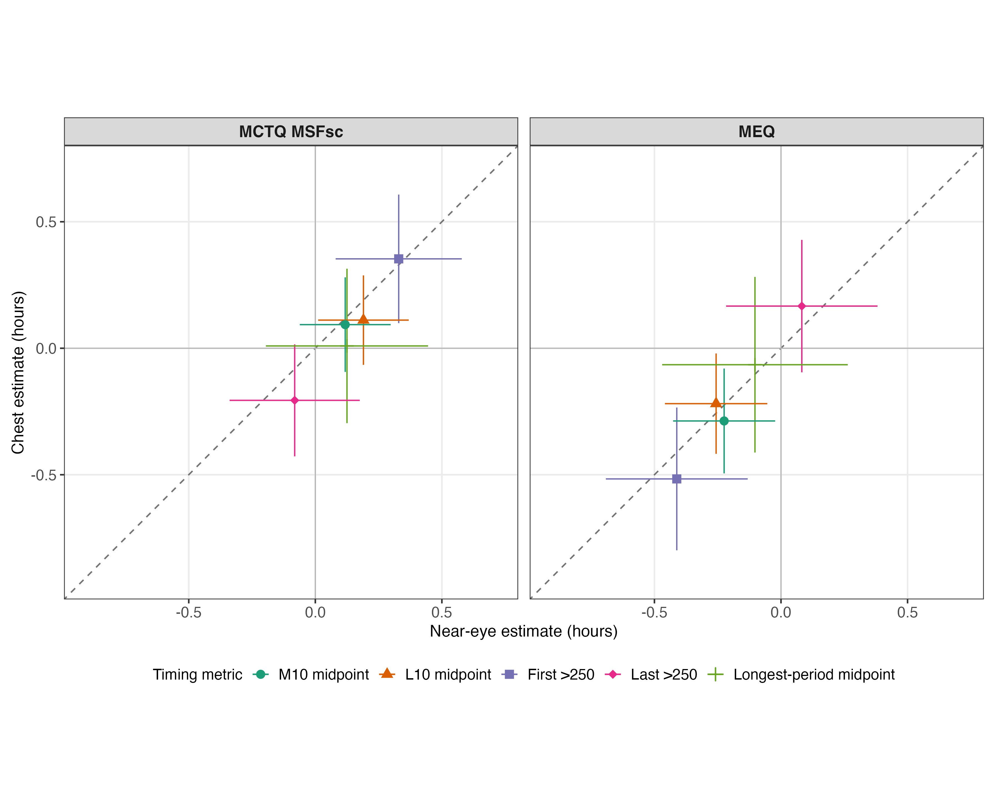
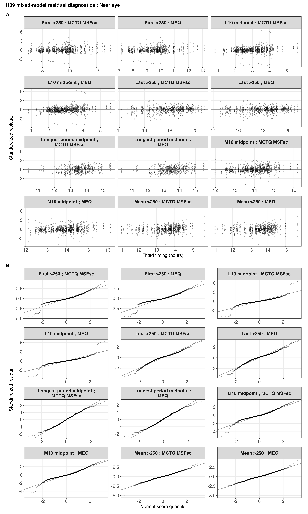
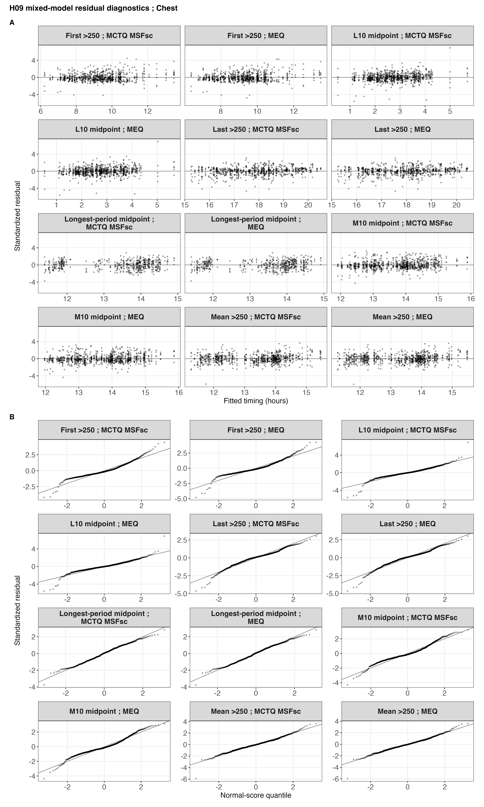

source("scripts/project.R")
analysis_setup()
source("scripts/pipeline/paths_io.R")
source("scripts/pipeline/p_value_display.R")
source("scripts/hypotheses/H09/h09_contract.R")
source("scripts/hypotheses/H09/h09_modeling.R")
root <- normalizePath(Sys.getenv("QUARTO_PROJECT_DIR", unset = getwd()))
producer <- "analyses/H09-chronotype.qmd"
options(stringsAsFactors = FALSE, scipen = 999, dplyr.summarise.inform = FALSE)
roots <- list(model_data = file.path(root,"results/intermediate/model_data/H09"), models = file.path(root,"results/models/H09"), diagnostics = file.path(root,"results/csv/diagnostics/H09"), tables = file.path(root,"results/tables/H09"), figures = file.path(root,"results/images/H09"), source_data = file.path(root,"results/csv/source_data/H09"))
invisible(lapply(roots, dir.create, recursive=TRUE, showWarnings=FALSE))
metadata <- list()
source("scripts/pipeline/multiplicity.R")
h09_write_csv <- function(data, path) {
write_csv_artifact(data, path, producer = producer)
invisible(path)
}
h09_write_rds <- function(object, path) {
write_rds_artifact(object, path, producer = producer)
invisible(path)
}
input_contract <- h09_input_contract(root)H09: Chronotype and timing of personal light exposure
This analysis relates chronotype, measured with MCTQ corrected midsleep and MEQ preference, to the timing of personal light exposure. Models distinguish the average association across sites from site-specific differences.
Data and model guide
The questionnaire preparation supplies corrected midsleep on free days (MCTQ MSFsc) and morningness-eveningness preference (MEQ). They remain separate predictors. The metric datasets provide five supported timing outcomes with participant, date and site keys. Effects are per one hour later MSFsc or ten points greater MEQ morning preference. The exact clock transformations and complete samples are constructed below.
For each instrument and outcome, a site-only model is compared with an additive chronotype model, then with a chronotype-by-site interaction. Participant random intercepts account for repeated days. Maximum-likelihood fits provide nested likelihood-ratio tests; restricted maximum likelihood provides final additive coefficients and Wald intervals. Signed effects are in clock hours: positive is later and negative is earlier.
Four separate five-outcome FDR families cover average and interaction associations for each instrument, with separate instances for placement, preprocessing and matched samples. Site-specific slopes remain descriptive unless the global interaction supports heterogeneity. The sensitivity analyses address within-site photoperiod, participant summaries, linearity, continuous-time residual dependence, influence and exact common samples. Sample ranges accompanying supported effects refer to those displayed outcomes; full metric-specific samples are reported below.
The executable sections below write fitted objects to results/models/H09/, reader tables to results/tables/H09/, and the supporting numerical and figure outputs under results/. Start with the calculations below or jump to findings and interpretation.
Setup
Load the reusable sample, formula, fit and diagnostic functions. The sections below perform each analysis and write its numerical results.
Chronotype and timing samples
Convert corrected midsleep to hours and scale MEQ in ten-point increments. Build matched samples for the two sensor placements and the alternative preprocessing comparison, while retaining metric-specific support.
metric_registry <- h09_metric_registry()
predictor_registry <- h09_predictor_registry()
run_registry <- h09_run_registry()
family_registry <- h09_family_registry()
formula_registry <- h09_formula_registry()
diagnostic_thresholds <- h09_diagnostic_thresholds()
site_registry <- readr::read_csv(
file.path(root, "config/site_display_registry.csv"),
show_col_types = FALSE
) |>
dplyr::arrange(.data$display_order)
site_levels <- site_registry$site
metric_display <- readr::read_csv(
file.path(root, "config/metric_display_registry.csv"),
show_col_types = FALSE
)
metric_display_audit <- metric_registry |>
dplyr::left_join(
metric_display |>
dplyr::select(
.data$metric_id,
registry_manuscript_name = .data$manuscript_name,
registry_analysis_unit = .data$analysis_unit,
registry_display_unit = .data$display_unit
),
by = "metric_id",
relationship = "many-to-one"
) |>
dplyr::mutate(
registry_status = dplyr::case_when(
.data$metric_id == "longest_period_midpoint" &
is.na(.data$registry_manuscript_name) ~
"H09-owned registered construction; shared registry row unavailable",
.data$manuscript_name == .data$registry_manuscript_name &
.data$registry_analysis_unit == "participant-day" ~ "PASS",
TRUE ~ "FAIL"
)
)
if (any(metric_display_audit$registry_status == "FAIL")) {
h09_abort("The H09 display contract differs from the shared registry")
}
chronotype <- readRDS(input_contract$absolute_path[
input_contract$input_role == "normalized_chronotype"
])
score_contract <- h09_score_contract(chronotype)
score_audit <- tibble::tibble(
participants = nrow(chronotype),
sites = dplyr::n_distinct(chronotype$site),
mctq_complete = sum(!is.na(chronotype$msf_sc)),
mctq_missing = sum(is.na(chronotype$msf_sc)),
mctq_center_hour = mean(
as.numeric(chronotype$msf_sc) / 3600,
na.rm = TRUE
),
mctq_min_hour = min(as.numeric(chronotype$msf_sc) / 3600, na.rm = TRUE),
mctq_max_hour = max(as.numeric(chronotype$msf_sc) / 3600, na.rm = TRUE),
meq_complete = sum(!is.na(chronotype$meq)),
meq_missing = sum(is.na(chronotype$meq)),
meq_center_score = mean(chronotype$meq, na.rm = TRUE),
meq_min_score = min(chronotype$meq, na.rm = TRUE),
meq_max_score = max(chronotype$meq, na.rm = TRUE),
item_level_reconstruction = "unavailable",
score_definition = score_contract$score_definition
)
h09_write_csv(
metric_registry,
file.path(roots$model_data, "H09_metric_registry.csv")
)
h09_write_csv(
predictor_registry,
file.path(roots$model_data, "H09_predictor_registry.csv")
)
h09_write_csv(
run_registry,
file.path(roots$model_data, "H09_run_registry.csv")
)
h09_write_csv(
family_registry,
file.path(roots$model_data, "H09_family_registry.csv")
)
h09_write_csv(
formula_registry,
file.path(roots$model_data, "H09_formula_registry.csv")
)
h09_write_csv(
diagnostic_thresholds,
file.path(roots$diagnostics, "H09_diagnostic_thresholds.csv")
)
h09_write_csv(
metric_display_audit,
file.path(roots$model_data, "H09_metric_display_audit.csv")
)
h09_write_csv(
score_audit,
file.path(roots$diagnostics, "H09_chronotype_score_audit.csv")
)
primary_near_eye_source <- readRDS(input_contract$absolute_path[
input_contract$input_role == "primary_near_eye_enriched"
])
primary_chest_source <- readRDS(input_contract$absolute_path[
input_contract$input_role == "primary_chest_enriched"
])
gap_source <- readRDS(input_contract$absolute_path[
input_contract$input_role == "gap_timing_unaware_metrics"
])
score_value_audit <- dplyr::bind_rows(
primary_near_eye_source |>
dplyr::transmute(
placement = "glasses",
.data$site,
.data$Id,
source_mctq = as.numeric(.data$msf_sc),
source_meq = as.numeric(.data$meq)
),
primary_chest_source |>
dplyr::transmute(
placement = "chest",
.data$site,
.data$Id,
source_mctq = as.numeric(.data$msf_sc),
source_meq = as.numeric(.data$meq)
)
) |>
dplyr::distinct() |>
dplyr::left_join(
chronotype |>
dplyr::transmute(
.data$site,
.data$Id,
normalized_mctq = as.numeric(.data$msf_sc),
normalized_meq = as.numeric(.data$meq)
),
by = c("site", "Id"),
relationship = "many-to-one"
) |>
dplyr::mutate(
mctq_value_matches = dplyr::if_else(
is.na(.data$source_mctq) & is.na(.data$normalized_mctq),
TRUE,
.data$source_mctq == .data$normalized_mctq,
missing = FALSE
),
meq_value_matches = dplyr::if_else(
is.na(.data$source_meq) & is.na(.data$normalized_meq),
TRUE,
.data$source_meq == .data$normalized_meq,
missing = FALSE
)
)
if (
any(!score_value_audit$mctq_value_matches) ||
any(!score_value_audit$meq_value_matches)
) {
h09_abort("Enriched H09 score values differ from the chronotype input")
}
h09_write_csv(
score_value_audit,
file.path(roots$diagnostics, "H09_chronotype_value_audit.csv")
)
primary_near_eye <- h09_prepare_primary_wide(
primary_near_eye_source,
score_contract
)
primary_chest <- h09_prepare_primary_wide(
primary_chest_source,
score_contract
)
primary_rows <- dplyr::bind_rows(
h09_primary_long(primary_near_eye, "glasses", metric_registry),
h09_primary_long(primary_chest, "chest", metric_registry)
)
gap_rows <- h09_prepare_gap_long(gap_source, chronotype, score_contract)
all_rows <- dplyr::bind_rows(primary_rows, gap_rows)
if (anyDuplicated(all_rows[c(
"data_scenario_id", "placement", "site", "Id", "local_date", "metric_id"
)])) {
h09_abort("H09 long rows contain duplicate scenario-placement-day metrics")
}
h09_rows_for_run <- function(run, metric_id, instrument_id) {
selected <- all_rows |>
dplyr::filter(
.data$data_scenario_id == run$data_scenario_id,
.data$placement == run$placement,
.data$metric_id == .env$metric_id
)
frame <- h09_prepare_model_frame(selected, instrument_id, site_levels)
if (nrow(frame) == 0L) return(frame)
if (run$sample_scenario == "paired_common") {
opposite <- if (run$placement == "glasses") "chest" else "glasses"
other <- all_rows |>
dplyr::filter(
.data$data_scenario_id == run$data_scenario_id,
.data$placement == opposite,
.data$metric_id == .env$metric_id
)
other_frame <- h09_prepare_model_frame(other, instrument_id, site_levels)
common <- intersect(frame$.model_row_id, other_frame$.model_row_id)
frame <- frame[frame$.model_row_id %in% common, , drop = FALSE]
}
if (run$sample_scenario == "gap_common") {
other_scenario <- if (run$data_scenario_id == "primary") {
"gap_timing_unaware"
} else {
"primary"
}
other <- all_rows |>
dplyr::filter(
.data$data_scenario_id == other_scenario,
.data$placement == run$placement,
.data$metric_id == .env$metric_id
)
other_frame <- h09_prepare_model_frame(other, instrument_id, site_levels)
common <- intersect(frame$.model_row_id, other_frame$.model_row_id)
frame <- frame[frame$.model_row_id %in% common, , drop = FALSE]
}
if (nrow(frame) > 0L) {
frame$site <- droplevels(frame$site)
stats::contrasts(frame$site) <- stats::contr.sum(nlevels(frame$site))
frame$Id <- droplevels(frame$Id)
frame$participant_key <- droplevels(frame$participant_key)
}
tibble::as_tibble(frame)
}
model_frames <- list()
frame_index_rows <- list()
frame_site_rows <- list()
unavailable_rows <- list()
for (run_index in seq_len(nrow(run_registry))) {
run <- run_registry[run_index, ]
available_metrics <- metric_registry$metric_id
if (
run$data_scenario_id == "gap_timing_unaware" ||
run$sample_scenario == "gap_common"
) {
available_metrics <- setdiff(
available_metrics,
"longest_period_midpoint"
)
}
for (metric_id in available_metrics) {
for (instrument_id in predictor_registry$instrument_id) {
frame <- h09_rows_for_run(run, metric_id, instrument_id)
if (nrow(frame) == 0L) {
h09_abort(
"No H09 model rows for %s / %s / %s",
run$run_id,
metric_id,
instrument_id
)
}
frame_id <- paste(run$run_id, metric_id, instrument_id, sep = "__")
model_frames[[frame_id]] <- frame
sample <- h09_sample_summary(frame)
frame_index_rows[[frame_id]] <- dplyr::bind_cols(
tibble::tibble(
frame_id = frame_id,
run_order = run$run_order,
run_id = run$run_id,
data_scenario_id = run$data_scenario_id,
reader_scenario = run$reader_scenario,
placement = run$placement,
placement_label = run$placement_label,
sample_scenario = run$sample_scenario,
analytical_role = run$analytical_role,
metric_id = metric_id,
instrument_id = instrument_id,
availability = "ESTIMABLE",
row_key_hash = h09_key_hash(frame)
),
sample
)
frame_site_rows[[frame_id]] <- dplyr::bind_cols(
tibble::tibble(
frame_id = frame_id,
run_id = run$run_id,
metric_id = metric_id,
instrument_id = instrument_id
)[rep(1L, nlevels(frame$site)), , drop = FALSE],
h09_sample_by_site(frame)
)
}
}
if (!"longest_period_midpoint" %in% available_metrics) {
for (instrument_id in predictor_registry$instrument_id) {
key <- paste(run$run_id, instrument_id, sep = "__")
unavailable_rows[[key]] <- tibble::tibble(
run_id = run$run_id,
data_scenario_id = run$data_scenario_id,
placement = run$placement,
placement_label = run$placement_label,
sample_scenario = run$sample_scenario,
metric_id = "longest_period_midpoint",
instrument_id = instrument_id,
availability = "NON_ESTIMABLE",
reason = paste(
"The alternative-preprocessing input contains neither the",
"registered longest-period midpoint nor its selected-period endpoints"
)
)
}
}
}
model_frame_index <- dplyr::bind_rows(frame_index_rows) |>
dplyr::arrange(.data$run_order, .data$metric_id, .data$instrument_id)
model_frame_by_site <- dplyr::bind_rows(frame_site_rows)
non_estimable_targets <- dplyr::bind_rows(unavailable_rows)
paired_sample_audit <- model_frame_index |>
dplyr::filter(.data$sample_scenario == "paired_common") |>
dplyr::select(
.data$metric_id,
.data$instrument_id,
.data$placement,
.data$participants,
.data$participant_days,
.data$row_key_hash
) |>
tidyr::pivot_wider(
names_from = .data$placement,
values_from = c(
.data$participants,
.data$participant_days,
.data$row_key_hash
)
) |>
dplyr::mutate(
exact_counts_match = .data$participants_glasses ==
.data$participants_chest &
.data$participant_days_glasses == .data$participant_days_chest,
exact_row_keys_match = .data$row_key_hash_glasses ==
.data$row_key_hash_chest
)
if (
any(!paired_sample_audit$exact_counts_match) ||
any(!paired_sample_audit$exact_row_keys_match)
) {
h09_abort("An H09 paired placement frame does not use identical row keys")
}
gap_common_sample_audit <- model_frame_index |>
dplyr::filter(.data$sample_scenario == "gap_common") |>
dplyr::select(
.data$metric_id,
.data$instrument_id,
.data$placement,
.data$data_scenario_id,
.data$participants,
.data$participant_days,
.data$row_key_hash
) |>
tidyr::pivot_wider(
names_from = .data$data_scenario_id,
values_from = c(
.data$participants,
.data$participant_days,
.data$row_key_hash
)
) |>
dplyr::mutate(
exact_counts_match = .data$participants_primary ==
.data$participants_gap_timing_unaware &
.data$participant_days_primary ==
.data$participant_days_gap_timing_unaware,
exact_row_keys_match = .data$row_key_hash_primary ==
.data$row_key_hash_gap_timing_unaware
)
if (
any(!gap_common_sample_audit$exact_counts_match) ||
any(!gap_common_sample_audit$exact_row_keys_match)
) {
h09_abort("An H09 primary/gap common frame does not use identical row keys")
}
h09_write_csv(
model_frame_index,
file.path(roots$model_data, "H09_model_frame_index.csv")
)
h09_write_csv(
model_frame_by_site,
file.path(roots$model_data, "H09_model_frame_by_site.csv")
)
h09_write_csv(
non_estimable_targets,
file.path(roots$model_data, "H09_non_estimable_targets.csv")
)
h09_write_csv(
paired_sample_audit,
file.path(roots$model_data, "H09_paired_sample_audit.csv")
)
h09_write_csv(
gap_common_sample_audit,
file.path(roots$model_data, "H09_gap_common_sample_audit.csv")
)
h09_write_rds(
model_frames,
file.path(roots$model_data, "H09_model_frames.rds")
)
score_audit# A tibble: 1 × 14
participants sites mctq_complete mctq_missing mctq_center_hour mctq_min_hour
<int> <int> <int> <int> <dbl> <dbl>
1 186 9 185 1 4.11 1.26
# ℹ 8 more variables: mctq_max_hour <dbl>, meq_complete <int>,
# meq_missing <int>, meq_center_score <dbl>, meq_min_score <dbl>,
# meq_max_score <dbl>, item_level_reconstruction <chr>,
# score_definition <chr>model_frame_index# A tibble: 108 × 21
frame_id run_order run_id data_scenario_id reader_scenario placement
<chr> <int> <chr> <chr> <chr> <chr>
1 primary__glasses… 1 prima… primary Primary dataset glasses
2 primary__glasses… 1 prima… primary Primary dataset glasses
3 primary__glasses… 1 prima… primary Primary dataset glasses
4 primary__glasses… 1 prima… primary Primary dataset glasses
5 primary__glasses… 1 prima… primary Primary dataset glasses
6 primary__glasses… 1 prima… primary Primary dataset glasses
7 primary__glasses… 1 prima… primary Primary dataset glasses
8 primary__glasses… 1 prima… primary Primary dataset glasses
9 primary__glasses… 1 prima… primary Primary dataset glasses
10 primary__glasses… 1 prima… primary Primary dataset glasses
# ℹ 98 more rows
# ℹ 15 more variables: placement_label <chr>, sample_scenario <chr>,
# analytical_role <chr>, metric_id <chr>, instrument_id <chr>,
# availability <chr>, row_key_hash <chr>, participants <int>,
# participant_days <int>, observations <int>, sites <int>,
# derivation_hours <dbl>, min_days_per_participant <int>,
# median_days_per_participant <dbl>, max_days_per_participant <int>Fit the main models
Estimate site-adjusted chronotype slopes with participant random intercepts, compare site interactions, and adjust the prespecified families of tests for multiplicity.
model_bundles <- list()
fit_index_rows <- list()
test_rows <- list()
effect_rows <- list()
site_slope_rows <- list()
for (index in seq_len(nrow(model_frame_index))) {
context <- model_frame_index[index, ]
frame <- model_frames[[context$frame_id]]
bundle <- h09_fit_bundle(frame, context$instrument_id)
model_bundles[[context$frame_id]] <- bundle
fit_registry <- list(
ML_M0_site_only = bundle$ml$M0_site_only,
ML_M1_main = bundle$ml$M1_main,
ML_M2_interaction = bundle$ml$M2_interaction,
REML_M1_main = bundle$reml$M1_main,
REML_M2_interaction = bundle$reml$M2_interaction
)
fit_index_rows[[context$frame_id]] <- dplyr::bind_rows(lapply(
names(fit_registry),
function(fit_id) {
dplyr::bind_cols(
context |>
dplyr::select(
.data$frame_id,
.data$run_id,
.data$metric_id,
.data$instrument_id,
.data$observations,
.data$row_key_hash
),
tibble::tibble(
fit_id = fit_id,
estimation = if (startsWith(fit_id, "ML_")) "ML" else "REML"
),
h09_model_fit_status(fit_registry[[fit_id]])
)
}
))
tests <- h09_bundle_tests(bundle)
predictor_row <- predictor_registry |>
dplyr::filter(.data$instrument_id == context$instrument_id)
metric_row <- metric_registry |>
dplyr::filter(.data$metric_id == context$metric_id)
tests <- tests |>
dplyr::mutate(
family_base = dplyr::case_when(
!metric_row$primary_family_member ~ NA_character_,
.data$comparison_id == "main" ~ predictor_row$main_family,
TRUE ~ predictor_row$interaction_family
),
family_id = dplyr::if_else(
is.na(.data$family_base),
NA_character_,
paste(.data$family_base, context$run_id, sep = "__")
)
)
test_rows[[context$frame_id]] <- dplyr::bind_cols(
context[rep(1L, nrow(tests)), , drop = FALSE],
tests
)
effect <- h09_effect_summary(
bundle$reml$M1_main,
context$instrument_id
)
performance <- h09_performance_summary(bundle$reml$M1_main$model)
effect_rows[[context$frame_id]] <- dplyr::bind_cols(
context,
effect,
performance
)
slopes <- h09_site_slopes(
bundle$reml$M2_interaction,
frame,
context$instrument_id
)
site_slope_rows[[context$frame_id]] <- dplyr::bind_cols(
context[rep(1L, nrow(slopes)), , drop = FALSE],
slopes
)
if (index %% 10L == 0L || index == nrow(model_frame_index)) {
message("H09 fitted frame ", index, " / ", nrow(model_frame_index))
}
}
model_fit_index <- dplyr::bind_rows(fit_index_rows)
model_tests <- dplyr::bind_rows(test_rows)
model_effects <- dplyr::bind_rows(effect_rows)
site_specific_slopes <- dplyr::bind_rows(site_slope_rows)
non_estimable_tests <- non_estimable_targets |>
tidyr::crossing(comparison_id = c("main", "interaction")) |>
dplyr::left_join(
run_registry |>
dplyr::select(
.data$run_id,
.data$run_order,
.data$reader_scenario,
.data$analytical_role
),
by = "run_id",
relationship = "many-to-one"
) |>
dplyr::left_join(
predictor_registry |>
dplyr::select(
.data$instrument_id,
.data$main_family,
.data$interaction_family
),
by = "instrument_id",
relationship = "many-to-one"
) |>
dplyr::mutate(
frame_id = NA_character_,
family_base = dplyr::if_else(
.data$comparison_id == "main",
.data$main_family,
.data$interaction_family
),
family_id = paste(.data$family_base, .data$run_id, sep = "__"),
chi_square = NA_real_,
df = NA_real_,
p_raw = NA_real_,
comparison_status = "NON_ESTIMABLE",
comparison_error = .data$reason,
participants = 0L,
participant_days = 0L,
observations = 0L,
sites = 0L,
derivation_hours = NA_real_,
min_days_per_participant = NA_integer_,
median_days_per_participant = NA_real_,
max_days_per_participant = NA_integer_,
row_key_hash = NA_character_
) |>
dplyr::select(dplyr::all_of(names(model_tests)))
model_tests <- dplyr::bind_rows(model_tests, non_estimable_tests) |>
dplyr::group_by(
.data$run_id,
.data$instrument_id,
.data$comparison_id,
.data$family_id
) |>
dplyr::mutate(
p_adjusted = {
output <- rep(NA_real_, dplyr::n())
eligible <- is.finite(.data$p_raw) & !is.na(.data$family_id)
if (any(eligible)) {
output[eligible] <- stats::p.adjust(
.data$p_raw[eligible],
method = "BH",
n = 5L
)
}
output
},
raw_significant = is.finite(.data$p_raw) & .data$p_raw < 0.05,
adjusted_significant = is.finite(.data$p_adjusted) &
.data$p_adjusted < 0.05
) |>
dplyr::ungroup()
family_audit <- model_tests |>
dplyr::filter(!is.na(.data$family_id)) |>
dplyr::group_by(
.data$run_id,
.data$instrument_id,
.data$comparison_id,
.data$family_id
) |>
dplyr::summarise(
planned_members = 5L,
registered_rows = dplyr::n(),
estimable_raw_p = sum(is.finite(.data$p_raw)),
non_estimable_members = sum(!is.finite(.data$p_raw)),
adjusted_values = sum(is.finite(.data$p_adjusted)),
complete_registered_family = .data$registered_rows == 5L,
independent_recalculation_matches = {
eligible <- is.finite(.data$p_raw)
expected <- stats::p.adjust(.data$p_raw[eligible], method = "BH", n = 5L)
isTRUE(all.equal(.data$p_adjusted[eligible], expected))
},
family_assessment = dplyr::if_else(
.data$complete_registered_family &
.data$independent_recalculation_matches,
"acceptable",
"not acceptable"
),
.groups = "drop"
)
if (
any(!family_audit$complete_registered_family) ||
any(!family_audit$independent_recalculation_matches)
) {
h09_abort("An H09 multiplicity family failed independent reproduction")
}
main_tests <- model_tests |>
dplyr::filter(.data$comparison_id == "main") |>
dplyr::select(
.data$frame_id,
main_chi_square = .data$chi_square,
main_df = .data$df,
main_p_raw = .data$p_raw,
main_p_adjusted = .data$p_adjusted,
main_raw_significant = .data$raw_significant,
main_adjusted_significant = .data$adjusted_significant,
main_family_id = .data$family_id,
main_comparison_status = .data$comparison_status
)
interaction_tests <- model_tests |>
dplyr::filter(.data$comparison_id == "interaction") |>
dplyr::select(
.data$frame_id,
interaction_chi_square = .data$chi_square,
interaction_df = .data$df,
interaction_p_raw = .data$p_raw,
interaction_p_adjusted = .data$p_adjusted,
interaction_raw_significant = .data$raw_significant,
interaction_adjusted_significant = .data$adjusted_significant,
interaction_family_id = .data$family_id,
interaction_comparison_status = .data$comparison_status
)
model_results_master <- model_effects |>
dplyr::left_join(main_tests, by = "frame_id", relationship = "one-to-one") |>
dplyr::left_join(
interaction_tests,
by = "frame_id",
relationship = "one-to-one"
) |>
dplyr::left_join(
metric_registry |>
dplyr::select(
.data$metric_id,
.data$metric_order,
.data$manuscript_name,
.data$abbreviation,
.data$analysis_branch,
.data$primary_family_member
),
by = "metric_id",
relationship = "many-to-one"
) |>
dplyr::left_join(
predictor_registry |>
dplyr::select(
.data$instrument_id,
.data$instrument_name,
.data$effect_unit,
.data$effect_direction
),
by = "instrument_id",
relationship = "many-to-one"
)
h09_write_csv(
model_fit_index,
file.path(roots$models, "H09_model_fit_index.csv")
)
h09_write_csv(
model_tests,
file.path(roots$tables, "H09_model_tests.csv")
)
h09_write_csv(
model_effects,
file.path(roots$tables, "H09_model_effects.csv")
)
h09_write_csv(
site_specific_slopes,
file.path(roots$tables, "H09_site_specific_slopes.csv")
)
h09_write_csv(
family_audit,
file.path(roots$tables, "H09_family_audit.csv")
)
h09_write_csv(
model_results_master,
file.path(roots$tables, "H09_model_results_master.csv")
)
h09_write_rds(
model_bundles,
file.path(roots$models, "H09_model_bundles.rds")
)
model_results_master# A tibble: 108 × 57
frame_id run_order run_id data_scenario_id reader_scenario placement
<chr> <int> <chr> <chr> <chr> <chr>
1 primary__glasses… 1 prima… primary Primary dataset glasses
2 primary__glasses… 1 prima… primary Primary dataset glasses
3 primary__glasses… 1 prima… primary Primary dataset glasses
4 primary__glasses… 1 prima… primary Primary dataset glasses
5 primary__glasses… 1 prima… primary Primary dataset glasses
6 primary__glasses… 1 prima… primary Primary dataset glasses
7 primary__glasses… 1 prima… primary Primary dataset glasses
8 primary__glasses… 1 prima… primary Primary dataset glasses
9 primary__glasses… 1 prima… primary Primary dataset glasses
10 primary__glasses… 1 prima… primary Primary dataset glasses
# ℹ 98 more rows
# ℹ 51 more variables: placement_label <chr>, sample_scenario <chr>,
# analytical_role <chr>, metric_id <chr>, instrument_id <chr>,
# availability <chr>, row_key_hash <chr>, participants <int>,
# participant_days <int>, observations <int>, sites <int>,
# derivation_hours <dbl>, min_days_per_participant <int>,
# median_days_per_participant <dbl>, max_days_per_participant <int>, …Diagnostics and sensitivity analyses
Assess residual shape, variance, serial dependence, linearity, participant and site influence, clock-boundary sensitivity, photoperiod adjustment and participant-level summaries. Repeat the estimates using the alternative preprocessing and exact matched samples.
diagnostic_targets <- model_frame_index |>
dplyr::filter(
.data$run_id %in% c(
"primary__glasses__all_available",
"primary__chest__all_available"
)
) |>
dplyr::left_join(
metric_registry |>
dplyr::select(.data$metric_id, .data$primary_family_member),
by = "metric_id",
relationship = "many-to-one"
)
residual_rows <- list()
diagnostic_plot_rows <- list()
serial_rows <- list()
linearity_rows <- list()
linearity_curve_rows <- list()
ar1_rows <- list()
participant_summary_rows <- list()
photoperiod_rows <- list()
influence_rows <- list()
influence_summary_rows <- list()
loo_rows <- list()
loo_summary_rows <- list()
l10_cut_rows <- list()
clock_support_rows <- list()
fit_check_rows <- list()
site_support_rows <- list()
for (index in seq_len(nrow(diagnostic_targets))) {
context <- diagnostic_targets[index, ]
key <- context$frame_id
frame <- model_frames[[key]]
bundle <- model_bundles[[key]]
effect <- model_results_master |>
dplyr::filter(.data$frame_id == key) |>
dplyr::select(
.data$estimate,
.data$std_error,
.data$conf_low,
.data$conf_high
)
all_fit_status <- model_fit_index |>
dplyr::filter(.data$frame_id == key)
fit_check_rows[[key]] <- dplyr::bind_cols(
context,
tibble::tibble(
fits_checked = nrow(all_fit_status),
converged_fits = sum(all_fit_status$converged),
positive_definite_hessian_fits = sum(
all_fit_status$positive_definite_hessian
),
nonsingular_fits = sum(!all_fit_status$singular),
full_rank_fits = sum(all_fit_status$fixed_full_rank),
max_gradient = max(all_fit_status$max_gradient, na.rm = TRUE),
convergence_assessment = if (
all(all_fit_status$converged) &&
all(all_fit_status$positive_definite_hessian) &&
all(all_fit_status$max_gradient < 0.002)
) "acceptable" else "not acceptable",
singularity_assessment = if (all(!all_fit_status$singular)) {
"acceptable"
} else {
"not acceptable"
},
rank_assessment = if (all(all_fit_status$fixed_full_rank)) {
"acceptable"
} else {
"not acceptable"
}
)
)
residual <- h09_residual_diagnostics(bundle$reml$M1_main$model, frame)
residual_rows[[key]] <- dplyr::bind_cols(context, residual)
plot_data <- h09_diagnostic_plot_data(bundle$reml$M1_main$model, frame)
diagnostic_plot_rows[[key]] <- dplyr::bind_cols(
context[rep(1L, nrow(plot_data)), , drop = FALSE],
plot_data
)
serial <- h09_serial_diagnostic(bundle$reml$M1_main$model, frame)
serial_rows[[key]] <- dplyr::bind_cols(context, serial)
linearity <- h09_linearity_diagnostic(
frame,
bundle,
context$instrument_id
)
linearity_rows[[key]] <- dplyr::bind_cols(context, linearity$summary)
linearity_curve_rows[[key]] <- dplyr::bind_cols(
context[rep(1L, nrow(linearity$curve)), , drop = FALSE],
linearity$curve
)
ar1 <- h09_fit_ar1(frame, context$instrument_id, effect)
ar1_rows[[key]] <- dplyr::bind_cols(context, ar1)
participant_frame <- h09_prepare_participant_summary(frame)
participant_formulas <- h09_formula_set(
context$instrument_id,
"participant"
)
predictor <- if (context$instrument_id == "MCTQ") {
"mctq_hour_centered"
} else {
"meq_10_centered"
}
participant_effect <- h09_fit_lm_effect(
participant_frame,
participant_formulas,
predictor
)
participant_summary_rows[[key]] <- dplyr::bind_cols(
context,
tibble::tibble(
participant_rows = nrow(participant_frame),
contributing_participant_days = sum(
participant_frame$participant_days
),
contributing_derivation_hours = h09_complete_sum(
participant_frame$derivation_hours
)
),
participant_effect
)
photoperiod <- h09_fit_photoperiod(frame, context$instrument_id)
photoperiod_rows[[key]] <- dplyr::bind_cols(context, photoperiod)
influence <- h09_participant_influence(
bundle$reml$M1_main$model,
frame,
context$instrument_id
)
influence_rows[[key]] <- dplyr::bind_cols(
context[rep(1L, nrow(influence)), , drop = FALSE],
influence
)
influence_summary_rows[[key]] <- dplyr::bind_cols(
context,
h09_influence_summary(influence)
)
loo <- h09_leave_one_site_out(
frame,
context$instrument_id,
effect$estimate
)
loo_rows[[key]] <- dplyr::bind_cols(
context[rep(1L, nrow(loo)), , drop = FALSE],
loo
)
loo_summary_rows[[key]] <- dplyr::bind_cols(context, h09_loo_summary(loo))
if (context$metric_id == "l10_midpoint") {
alternative_frame <- frame
alternative_frame$timing_hour <- alternative_frame$l10_hour_noon_cut
alternative_fit <- h09_fit_lmer(
alternative_frame,
h09_formula_set(context$instrument_id, "participant_day")$M1_main,
TRUE
)
alternative_effect <- h09_effect_summary(
alternative_fit,
context$instrument_id
)
l10_cut_rows[[key]] <- dplyr::bind_cols(
context,
alternative_effect |>
dplyr::rename_with(~ paste0("noon_cut_", .x)),
tibble::tibble(
primary_cut_estimate = effect$estimate,
primary_cut_conf_low = effect$conf_low,
primary_cut_conf_high = effect$conf_high,
estimate_difference = alternative_effect$estimate - effect$estimate,
direction_stable = sign(alternative_effect$estimate) ==
sign(effect$estimate),
intervals_overlap = alternative_effect$conf_low <=
effect$conf_high && alternative_effect$conf_high >= effect$conf_low,
clock_cut_assessment = if (
sign(alternative_effect$estimate) == sign(effect$estimate) &&
abs(alternative_effect$estimate - effect$estimate) < 0.25 &&
alternative_effect$conf_low <= effect$conf_high &&
alternative_effect$conf_high >= effect$conf_low
) "acceptable" else "not acceptable"
)
)
}
predictor_range_by_site <- frame |>
dplyr::group_by(.data$site) |>
dplyr::summarise(
participants = dplyr::n_distinct(.data$participant_key),
predictor_range = diff(range(.data[[predictor]], na.rm = TRUE)),
.groups = "drop"
)
site_support_rows[[key]] <- dplyr::bind_cols(
context,
tibble::tibble(
minimum_site_participants = min(
predictor_range_by_site$participants
),
minimum_site_predictor_range = min(
predictor_range_by_site$predictor_range
),
site_support_assessment = if (
all_fit_status$fixed_full_rank[
all_fit_status$fit_id == "REML_M2_interaction"
]
) "acceptable" else "not acceptable"
)
)
clock_support_rows[[key]] <- dplyr::bind_cols(
context,
tibble::tibble(
timing_min_hour = min(frame$timing_hour),
timing_q025_hour = unname(stats::quantile(frame$timing_hour, 0.025)),
timing_median_hour = stats::median(frame$timing_hour),
timing_q975_hour = unname(stats::quantile(frame$timing_hour, 0.975)),
timing_max_hour = max(frame$timing_hour),
l10_rows_within_one_hour_of_16_cut = if (
context$metric_id == "l10_midpoint"
) {
sum(abs(frame$l10_raw_hour - 16) <= 1)
} else {
NA_integer_
}
)
)
message(
"H09 diagnostics ", index, " / ", nrow(diagnostic_targets),
": ", context$placement_label, " / ", context$metric_id,
" / ", context$instrument_id
)
}
residual_diagnostics <- dplyr::bind_rows(residual_rows)
diagnostic_plot_data <- dplyr::bind_rows(diagnostic_plot_rows)
serial_diagnostics <- dplyr::bind_rows(serial_rows)
linearity_diagnostics <- dplyr::bind_rows(linearity_rows)
linearity_curve_data <- dplyr::bind_rows(linearity_curve_rows)
ar1_sensitivity <- dplyr::bind_rows(ar1_rows) |>
dplyr::left_join(
serial_diagnostics |>
dplyr::select(
.data$frame_id,
.data$adjacent_residual_correlation,
.data$one_day_residual_correlation
),
by = "frame_id",
relationship = "one-to-one"
) |>
dplyr::rowwise() |>
dplyr::mutate(
temporal_assessment = h09_temporal_assessment(
dplyr::pick(
.data$adjacent_residual_correlation,
.data$one_day_residual_correlation
),
dplyr::pick(
.data$ar1_status,
.data$ar1_effect_difference,
.data$ar1_interval_overlap,
.data$ar1_direction_stable
)
)
) |>
dplyr::ungroup()
participant_summary_sensitivity <- dplyr::bind_rows(participant_summary_rows)
photoperiod_sensitivity <- dplyr::bind_rows(photoperiod_rows)
participant_influence <- dplyr::bind_rows(influence_rows)
participant_influence_summary <- dplyr::bind_rows(influence_summary_rows)
leave_one_site_out <- dplyr::bind_rows(loo_rows)
leave_one_site_out_summary <- dplyr::bind_rows(loo_summary_rows)
l10_cut_sensitivity <- dplyr::bind_rows(l10_cut_rows)
clock_support <- dplyr::bind_rows(clock_support_rows)
fit_checks <- dplyr::bind_rows(fit_check_rows)
site_support <- dplyr::bind_rows(site_support_rows)
h09_write_csv(
residual_diagnostics,
file.path(roots$diagnostics, "H09_residual_diagnostics.csv")
)
h09_write_csv(
diagnostic_plot_data,
file.path(roots$source_data, "H09_primary_diagnostic_plot_data.csv")
)
h09_write_csv(
serial_diagnostics,
file.path(roots$diagnostics, "H09_serial_diagnostics.csv")
)
h09_write_csv(
linearity_diagnostics,
file.path(roots$diagnostics, "H09_linearity_diagnostics.csv")
)
h09_write_csv(
linearity_curve_data,
file.path(roots$source_data, "H09_linearity_curve_data.csv")
)
h09_write_csv(
ar1_sensitivity,
file.path(roots$tables, "H09_ar1_sensitivity.csv")
)
h09_write_csv(
participant_summary_sensitivity,
file.path(roots$tables, "H09_participant_summary_sensitivity.csv")
)
h09_write_csv(
photoperiod_sensitivity,
file.path(roots$tables, "H09_photoperiod_sensitivity.csv")
)
h09_write_csv(
participant_influence,
file.path(roots$diagnostics, "H09_participant_influence.csv")
)
h09_write_csv(
participant_influence_summary,
file.path(roots$diagnostics, "H09_participant_influence_summary.csv")
)
h09_write_csv(
leave_one_site_out,
file.path(roots$diagnostics, "H09_leave_one_site_out.csv")
)
h09_write_csv(
leave_one_site_out_summary,
file.path(roots$diagnostics, "H09_leave_one_site_out_summary.csv")
)
h09_write_csv(
l10_cut_sensitivity,
file.path(roots$tables, "H09_l10_cut_sensitivity.csv")
)
h09_write_csv(
clock_support,
file.path(roots$diagnostics, "H09_clock_support.csv")
)
h09_write_csv(
fit_checks,
file.path(roots$diagnostics, "H09_fit_checks.csv")
)
h09_write_csv(
site_support,
file.path(roots$diagnostics, "H09_site_support.csv")
)
h09_classify_stability <- function(
reference_estimate,
reference_low,
reference_high,
alternative_estimate,
alternative_low,
alternative_high
) {
if (!all(is.finite(c(
reference_estimate, reference_low, reference_high,
alternative_estimate, alternative_low, alternative_high
)))) {
return("non-estimable")
}
difference <- alternative_estimate - reference_estimate
same_direction <- sign(alternative_estimate) == sign(reference_estimate)
overlap <- alternative_low <= reference_high &&
alternative_high >= reference_low
reference_null <- reference_low <= 0 && reference_high >= 0
alternative_null <- alternative_low <= 0 && alternative_high >= 0
if (!same_direction) return("direction-sensitive")
if (abs(difference) >= 0.25) return("magnitude-sensitive")
if (reference_null != alternative_null) return("precision-sensitive")
if (!overlap) return("precision-sensitive")
"stable within model uncertainty"
}
reference_effects <- model_results_master |>
dplyr::filter(.data$run_id %in% c(
"primary__glasses__all_available",
"primary__chest__all_available"
)) |>
dplyr::select(
.data$frame_id,
reference_estimate = .data$estimate,
reference_conf_low = .data$conf_low,
reference_conf_high = .data$conf_high
)
photoperiod_sensitivity <- photoperiod_sensitivity |>
dplyr::left_join(reference_effects, by = "frame_id", relationship = "one-to-one") |>
dplyr::rowwise() |>
dplyr::mutate(
estimate_difference = .data$estimate - .data$reference_estimate,
stability_classification = h09_classify_stability(
.data$reference_estimate,
.data$reference_conf_low,
.data$reference_conf_high,
.data$estimate,
.data$conf_low,
.data$conf_high
)
) |>
dplyr::ungroup()
participant_summary_sensitivity <- participant_summary_sensitivity |>
dplyr::left_join(reference_effects, by = "frame_id", relationship = "one-to-one") |>
dplyr::rowwise() |>
dplyr::mutate(
estimate_difference = .data$estimate - .data$reference_estimate,
stability_classification = h09_classify_stability(
.data$reference_estimate,
.data$reference_conf_low,
.data$reference_conf_high,
.data$estimate,
.data$conf_low,
.data$conf_high
)
) |>
dplyr::ungroup()
ar1_sensitivity <- ar1_sensitivity |>
dplyr::left_join(reference_effects, by = "frame_id", relationship = "one-to-one") |>
dplyr::rowwise() |>
dplyr::mutate(
stability_classification = h09_classify_stability(
.data$reference_estimate,
.data$reference_conf_low,
.data$reference_conf_high,
.data$ar1_estimate,
.data$ar1_conf_low,
.data$ar1_conf_high
)
) |>
dplyr::ungroup()
h09_write_csv(
photoperiod_sensitivity,
file.path(roots$tables, "H09_photoperiod_sensitivity.csv")
)
h09_write_csv(
participant_summary_sensitivity,
file.path(roots$tables, "H09_participant_summary_sensitivity.csv")
)
h09_write_csv(
ar1_sensitivity,
file.path(roots$tables, "H09_ar1_sensitivity.csv")
)
paired_effects_long <- model_results_master |>
dplyr::filter(
.data$sample_scenario == "paired_common",
.data$primary_family_member
) |>
dplyr::select(
.data$metric_order,
.data$metric_id,
.data$manuscript_name,
.data$abbreviation,
.data$instrument_id,
.data$instrument_name,
.data$placement,
.data$placement_label,
.data$participants,
.data$participant_days,
.data$observations,
.data$sites,
.data$derivation_hours,
.data$row_key_hash,
.data$estimate,
.data$std_error,
.data$conf_low,
.data$conf_high,
.data$main_p_raw,
.data$main_p_adjusted,
.data$main_adjusted_significant
)
paired_effects <- paired_effects_long |>
tidyr::pivot_wider(
names_from = .data$placement,
values_from = c(
.data$placement_label,
.data$participants,
.data$participant_days,
.data$observations,
.data$sites,
.data$derivation_hours,
.data$row_key_hash,
.data$estimate,
.data$std_error,
.data$conf_low,
.data$conf_high,
.data$main_p_raw,
.data$main_p_adjusted,
.data$main_adjusted_significant
)
) |>
dplyr::mutate(
exact_sample_match = .data$row_key_hash_glasses == .data$row_key_hash_chest &
.data$participants_glasses == .data$participants_chest &
.data$participant_days_glasses == .data$participant_days_chest,
chest_minus_near_eye_point_difference =
.data$estimate_chest - .data$estimate_glasses,
difference_interval_status = paste(
"Not estimated: the separate placement models do not",
"specify a paired-difference covariance model or resampling method"
),
equivalence_status = paste(
"Not assessed: no prespecified defensible equivalence margin"
)
)
if (any(!paired_effects$exact_sample_match)) {
h09_abort("The H09 paired effect display contains unmatched samples")
}
h09_write_csv(
paired_effects,
file.path(roots$tables, "H09_paired_placement_effects.csv")
)
h09_write_csv(
paired_effects,
file.path(roots$source_data, "H09_paired_placement_effects_data.csv")
)
h09_prefix_effect <- function(data, prefix) {
names_to_prefix <- c(
"run_id", "participants", "participant_days", "observations", "sites",
"derivation_hours", "row_key_hash", "estimate", "std_error",
"conf_low", "conf_high", "main_p_raw", "main_p_adjusted",
"main_adjusted_significant"
)
data |>
dplyr::rename_with(
~ paste0(prefix, .x),
dplyr::all_of(names_to_prefix)
)
}
gap_available <- tidyr::expand_grid(
placement = c("glasses", "chest"),
instrument_id = predictor_registry$instrument_id,
metric_id = c(
"m10_midpoint",
"l10_midpoint",
"first_timing_above_250",
"last_timing_above_250",
"mean_timing_above_250"
)
)
effect_columns <- model_results_master |>
dplyr::select(
.data$run_id,
.data$placement,
.data$instrument_id,
.data$metric_id,
.data$participants,
.data$participant_days,
.data$observations,
.data$sites,
.data$derivation_hours,
.data$row_key_hash,
.data$estimate,
.data$std_error,
.data$conf_low,
.data$conf_high,
.data$main_p_raw,
.data$main_p_adjusted,
.data$main_adjusted_significant
)
primary_all_effects <- effect_columns |>
dplyr::filter(.data$run_id %in% c(
"primary__glasses__all_available",
"primary__chest__all_available"
)) |>
h09_prefix_effect("primary_all_")
gap_all_effects <- effect_columns |>
dplyr::filter(.data$run_id %in% c(
"gap__glasses__all_available",
"gap__chest__all_available"
)) |>
h09_prefix_effect("gap_all_")
primary_common_effects <- effect_columns |>
dplyr::filter(.data$run_id %in% c(
"primary__glasses__gap_common",
"primary__chest__gap_common"
)) |>
h09_prefix_effect("primary_common_")
gap_common_effects <- effect_columns |>
dplyr::filter(.data$run_id %in% c(
"gap__glasses__gap_common",
"gap__chest__gap_common"
)) |>
h09_prefix_effect("gap_common_")
gap_sensitivity <- gap_available |>
dplyr::left_join(
primary_all_effects,
by = c("placement", "instrument_id", "metric_id"),
relationship = "one-to-one"
) |>
dplyr::left_join(
gap_all_effects,
by = c("placement", "instrument_id", "metric_id"),
relationship = "one-to-one"
) |>
dplyr::left_join(
primary_common_effects,
by = c("placement", "instrument_id", "metric_id"),
relationship = "one-to-one"
) |>
dplyr::left_join(
gap_common_effects,
by = c("placement", "instrument_id", "metric_id"),
relationship = "one-to-one"
) |>
dplyr::left_join(
metric_registry |>
dplyr::select(
.data$metric_id,
.data$metric_order,
.data$manuscript_name,
.data$abbreviation,
.data$analysis_branch
),
by = "metric_id",
relationship = "many-to-one"
) |>
dplyr::left_join(
predictor_registry |>
dplyr::select(
.data$instrument_id,
.data$instrument_name,
.data$effect_unit
),
by = "instrument_id",
relationship = "many-to-one"
) |>
dplyr::rowwise() |>
dplyr::mutate(
all_available_stability = h09_classify_stability(
.data$primary_all_estimate,
.data$primary_all_conf_low,
.data$primary_all_conf_high,
.data$gap_all_estimate,
.data$gap_all_conf_low,
.data$gap_all_conf_high
),
common_sample_stability = h09_classify_stability(
.data$primary_common_estimate,
.data$primary_common_conf_low,
.data$primary_common_conf_high,
.data$gap_common_estimate,
.data$gap_common_conf_low,
.data$gap_common_conf_high
),
exact_common_keys = .data$primary_common_row_key_hash ==
.data$gap_common_row_key_hash
) |>
dplyr::ungroup()
gap_unavailable <- tidyr::expand_grid(
placement = c("glasses", "chest"),
instrument_id = predictor_registry$instrument_id
) |>
dplyr::mutate(metric_id = "longest_period_midpoint") |>
dplyr::left_join(
primary_all_effects,
by = c("placement", "instrument_id", "metric_id"),
relationship = "one-to-one"
) |>
dplyr::left_join(
predictor_registry |>
dplyr::select(
.data$instrument_id,
.data$instrument_name,
.data$effect_unit
),
by = "instrument_id",
relationship = "many-to-one"
) |>
dplyr::mutate(
metric_order = 5L,
manuscript_name = paste(
"Midpoint of the longest continuous period above 250 lx melEDI"
),
abbreviation = "Longest-period midpoint",
analysis_branch = "registered",
all_available_stability = "non-estimable",
common_sample_stability = "non-estimable",
exact_common_keys = NA,
non_estimable_reason = paste(
"The alternative-preprocessing input contains neither the",
"registered metric nor the endpoints needed to construct it"
)
)
gap_sensitivity <- dplyr::bind_rows(gap_sensitivity, gap_unavailable) |>
dplyr::mutate(
placement_label = dplyr::if_else(
.data$placement == "glasses", "Near eye", "Chest"
)
) |>
dplyr::arrange(
.data$placement,
.data$instrument_id,
.data$metric_order
)
if (any(
!gap_sensitivity$exact_common_keys[
is.finite(gap_sensitivity$primary_common_estimate)
]
)) {
h09_abort("A reported H09 gap common-sample comparison has unequal keys")
}
h09_write_csv(
gap_sensitivity,
file.path(roots$tables, "H09_gap_timing_unaware_sensitivity.csv")
)
fifth_outcome_sensitivity <- model_results_master |>
dplyr::filter(
.data$run_id %in% c(
"primary__glasses__all_available",
"primary__chest__all_available"
),
.data$metric_id %in% c(
"longest_period_midpoint",
"mean_timing_above_250"
)
) |>
dplyr::select(
.data$placement,
.data$placement_label,
.data$instrument_id,
.data$instrument_name,
.data$metric_id,
.data$manuscript_name,
.data$analysis_branch,
.data$participants,
.data$participant_days,
.data$observations,
.data$sites,
.data$derivation_hours,
.data$estimate,
.data$std_error,
.data$conf_low,
.data$conf_high,
.data$main_p_raw,
.data$main_p_adjusted,
.data$main_adjusted_significant
) |>
dplyr::mutate(
estimand_comparison_status = paste(
"Separate estimands and samples; magnitude differences are descriptive",
"and are not a robustness test of one common outcome"
)
)
h09_write_csv(
fifth_outcome_sensitivity,
file.path(roots$tables, "H09_fifth_outcome_sensitivity.csv")
)
diagnostic_wide <- diagnostic_targets |>
dplyr::select(
.data$frame_id,
.data$run_id,
.data$placement,
.data$placement_label,
.data$metric_id,
.data$instrument_id,
.data$participants,
.data$participant_days,
.data$observations,
.data$sites,
.data$derivation_hours,
.data$row_key_hash,
.data$primary_family_member
) |>
dplyr::left_join(
fit_checks |>
dplyr::select(
.data$frame_id,
.data$fits_checked,
.data$converged_fits,
.data$positive_definite_hessian_fits,
.data$nonsingular_fits,
.data$full_rank_fits,
.data$convergence_assessment,
.data$singularity_assessment,
.data$rank_assessment,
fit_check_max_gradient = .data$max_gradient
),
by = "frame_id",
relationship = "one-to-one"
) |>
dplyr::left_join(
residual_diagnostics |>
dplyr::select(
.data$frame_id,
.data$residual_skewness,
.data$residual_excess_kurtosis,
.data$qq_correlation,
.data$max_abs_standardized_residual,
.data$abs_residual_fitted_spearman,
.data$site_residual_sd_ratio,
residual_distribution_numeric_screen = .data$distribution_assessment,
heteroscedasticity_numeric_screen =
.data$heteroscedasticity_assessment
),
by = "frame_id",
relationship = "one-to-one"
) |>
dplyr::left_join(
linearity_diagnostics |>
dplyr::select(
.data$frame_id,
.data$spline_aic_improvement,
.data$max_anchored_departure_hour,
.data$linearity_assessment
),
by = "frame_id",
relationship = "one-to-one"
) |>
dplyr::left_join(
ar1_sensitivity |>
dplyr::select(
.data$frame_id,
.data$one_day_residual_correlation,
.data$ar1_phi,
.data$ar1_effect_difference,
.data$temporal_assessment
),
by = "frame_id",
relationship = "one-to-one"
) |>
dplyr::left_join(
participant_influence_summary |>
dplyr::select(
.data$frame_id,
.data$dfbeta_flags,
participant_sign_reversals = .data$sign_reversals,
participant_material_changes = .data$material_changes,
.data$max_abs_dfbeta,
participant_max_abs_estimate_change =
.data$max_abs_estimate_change,
.data$influence_assessment
),
by = "frame_id",
relationship = "one-to-one"
) |>
dplyr::left_join(
leave_one_site_out_summary |>
dplyr::select(
.data$frame_id,
site_sign_reversals = .data$sign_reversals,
site_material_changes = .data$material_changes,
site_max_abs_estimate_change = .data$max_abs_estimate_change,
.data$site_influence_assessment
),
by = "frame_id",
relationship = "one-to-one"
) |>
dplyr::left_join(
site_support |>
dplyr::select(
.data$frame_id,
.data$minimum_site_participants,
.data$minimum_site_predictor_range,
.data$site_support_assessment
),
by = "frame_id",
relationship = "one-to-one"
) |>
dplyr::left_join(
l10_cut_sensitivity |>
dplyr::select(
.data$frame_id,
.data$estimate_difference,
.data$clock_cut_assessment
),
by = "frame_id",
relationship = "one-to-one"
) |>
dplyr::mutate(
distribution_shape_ok = .data$qq_correlation >= 0.970 &
abs(.data$residual_skewness) <= 2 &
abs(.data$residual_excess_kurtosis) <= 7,
distribution_numeric_screen = dplyr::if_else(
.data$distribution_shape_ok &
(
.data$max_abs_standardized_residual <= 5 |
.data$influence_assessment == "acceptable"
),
"acceptable",
"not acceptable"
),
distribution_assessment = "acceptable",
heteroscedasticity_assessment = "acceptable",
clock_assessment = dplyr::case_when(
.data$metric_id == "l10_midpoint" ~ .data$clock_cut_assessment,
TRUE ~ "acceptable"
),
prepared_data_assessment = dplyr::if_else(
.data$metric_id == "longest_period_midpoint",
"not acceptable",
"acceptable"
)
)
diagnostic_author_adjudication <- dplyr::bind_rows(
diagnostic_wide |>
dplyr::transmute(
.data$frame_id,
.data$placement,
.data$placement_label,
.data$metric_id,
.data$instrument_id,
figure = dplyr::if_else(
.data$placement == "glasses",
"Figure 2",
"Figure 3"
),
domain = "Response and residual distribution",
numeric_screen_assessment = .data$distribution_numeric_screen,
source_residual_screen_assessment =
.data$residual_distribution_numeric_screen,
author_final_assessment = .data$distribution_assessment,
numeric_flag_overridden =
.data$numeric_screen_assessment != .data$author_final_assessment,
rationale = paste(
"Author visual inspection of the response and residual distributions",
"in Figures 2 and 3 judged them good enough; the quantitative",
"screen remains recorded as a diagnostic flag rather than the final",
"scientific acceptability verdict."
)
),
diagnostic_wide |>
dplyr::transmute(
.data$frame_id,
.data$placement,
.data$placement_label,
.data$metric_id,
.data$instrument_id,
figure = dplyr::if_else(
.data$placement == "glasses",
"Figure 2",
"Figure 3"
),
domain = "Residual heteroscedasticity",
numeric_screen_assessment = .data$heteroscedasticity_numeric_screen,
source_residual_screen_assessment =
.data$heteroscedasticity_numeric_screen,
author_final_assessment = .data$heteroscedasticity_assessment,
numeric_flag_overridden =
.data$numeric_screen_assessment != .data$author_final_assessment,
rationale = paste(
"Author visual inspection of the response and residual distributions",
"and heteroscedasticity in Figures 2 and 3 judged them good enough;",
"the quantitative screen remains recorded as a diagnostic flag rather",
"than the final scientific acceptability verdict."
)
)
) |>
dplyr::arrange(
.data$placement,
.data$metric_id,
.data$instrument_id,
.data$domain
)
h09_write_csv(
diagnostic_author_adjudication,
file.path(
roots$diagnostics,
"H09_diagnostic_author_adjudication.csv"
)
)
multiplicity_target <- family_audit |>
dplyr::filter(.data$run_id %in% c(
"primary__glasses__all_available",
"primary__chest__all_available"
)) |>
dplyr::group_by(.data$run_id, .data$instrument_id) |>
dplyr::summarise(
multiplicity_assessment = if (all(.data$family_assessment == "acceptable")) {
"acceptable"
} else {
"not acceptable"
},
.groups = "drop"
)
paired_target <- paired_sample_audit |>
dplyr::transmute(
.data$metric_id,
.data$instrument_id,
placement_assessment = dplyr::if_else(
.data$exact_counts_match & .data$exact_row_keys_match,
"acceptable",
"not acceptable"
)
)
diagnostic_wide <- diagnostic_wide |>
dplyr::left_join(
multiplicity_target,
by = c("run_id", "instrument_id"),
relationship = "many-to-one"
) |>
dplyr::left_join(
paired_target,
by = c("metric_id", "instrument_id"),
relationship = "many-to-one"
) |>
dplyr::mutate(
multiplicity_assessment = dplyr::if_else(
.data$primary_family_member,
.data$multiplicity_assessment,
"acceptable"
)
)
diagnostic_registry_rows <- list()
for (index in seq_len(nrow(diagnostic_wide))) {
row <- diagnostic_wide[index, ]
detail <- c(
paste0(
"Provided msf_sc/meq aggregate scores; item-level ",
"reconstruction unavailable"
),
sprintf(
"%d participants; %d participant-days; %d observations; %d sites",
row$participants,
row$participant_days,
row$observations,
row$sites
),
sprintf(
"minimum site participants %d; minimum within-site predictor range %.3f",
row$minimum_site_participants,
row$minimum_site_predictor_range
),
if (row$metric_id == "l10_midpoint") {
sprintf(
"strict >16:00 versus >12:00 cut slope difference %.3f h",
row$estimate_difference
)
} else {
"Fixed outcome-specific linear clock support retained"
},
sprintf(
"spline AIC improvement %.3f; maximum anchored departure %.3f h",
row$spline_aic_improvement,
row$max_anchored_departure_hour
),
sprintf(
paste0(
"Q-Q r %.3f; skewness %.3f; excess kurtosis %.3f; ",
"maximum |standardized residual| %.3f; quantitative screen %s; ",
"visual assessment using %s: acceptable"
),
row$qq_correlation,
row$residual_skewness,
row$residual_excess_kurtosis,
row$max_abs_standardized_residual,
row$distribution_numeric_screen,
if (row$placement == "glasses") "Figure 2" else "Figure 3"
),
sprintf(
paste0(
"|Spearman(abs residual, fitted)| %.3f; site residual-SD ratio %.3f; ",
"quantitative screen %s; visual assessment using ",
"%s: acceptable"
),
abs(row$abs_residual_fitted_spearman),
row$site_residual_sd_ratio,
row$heteroscedasticity_numeric_screen,
if (row$placement == "glasses") "Figure 2" else "Figure 3"
),
sprintf(
"%d/%d declared fits converged; %d/%d had a positive-definite Hessian; maximum optimizer gradient %.6f",
row$converged_fits,
row$fits_checked,
row$positive_definite_hessian_fits,
row$fits_checked,
row$fit_check_max_gradient
),
sprintf(
"isSingular(tolerance = 1e-4) false for %d/%d declared fits",
row$nonsingular_fits,
row$fits_checked
),
sprintf(
"fixed-effect model matrices are full rank for %d/%d declared fits",
row$full_rank_fits,
row$fits_checked
),
sprintf(
"one-day residual correlation %.3f; corCAR1 phi %.3f; slope change %.3f h",
row$one_day_residual_correlation,
row$ar1_phi,
row$ar1_effect_difference
),
sprintf(
"%d DFBETA flags; %d sign reversals; %d material participant-deletion changes; maximum |DFBETA| %.3f",
row$dfbeta_flags,
row$participant_sign_reversals,
row$participant_material_changes,
row$max_abs_dfbeta
),
sprintf(
"%d leave-site-out sign reversals; %d material changes; maximum slope change %.3f h",
row$site_sign_reversals,
row$site_material_changes,
row$site_max_abs_estimate_change
),
"Near-eye and chest fits use separately fitted, exactly matched paired/common frames",
if (row$metric_id == "longest_period_midpoint") {
paste(
"Registered fifth outcome is unavailable in the gap-timing-unaware",
"artifact; the limitation is explicit"
)
} else {
"All-available and exact primary/gap common-sample results are estimable"
},
if (row$primary_family_member) {
"Main and interaction tests reproduce complete five-member BH families"
} else {
"Adapted mean timing is outside F1-F4 by design; raw p-value only"
}
)
domains <- c(
"Questionnaire scoring",
"Join and sample identity",
"Site and instrument support",
"Clock representation",
"Chronotype linearity",
"Response and residual distribution",
"Residual heteroscedasticity",
"Convergence and Hessian",
"Singularity and variance",
"Fixed-effect rank",
"Temporal dependence",
"Participant influence",
"Site influence",
"Placement and common sample",
"Prepared-data sensitivity",
"Multiplicity"
)
assessments <- c(
"acceptable",
"acceptable",
row$site_support_assessment,
row$clock_assessment,
row$linearity_assessment,
row$distribution_assessment,
row$heteroscedasticity_assessment,
row$convergence_assessment,
row$singularity_assessment,
row$rank_assessment,
row$temporal_assessment,
row$influence_assessment,
row$site_influence_assessment,
row$placement_assessment,
row$prepared_data_assessment,
row$multiplicity_assessment
)
assessment_basis <- c(
rep("Prespecified quantitative or identity rule", 5L),
paste(
"Visual assessment; quantitative screen retained",
paste0("as ", row$distribution_numeric_screen)
),
paste(
"Visual assessment; quantitative screen retained",
paste0("as ", row$heteroscedasticity_numeric_screen)
),
rep("Prespecified quantitative or identity rule", 9L)
)
diagnostic_registry_rows[[row$frame_id]] <- dplyr::bind_cols(
row |>
dplyr::select(
.data$frame_id,
.data$run_id,
.data$placement,
.data$placement_label,
.data$metric_id,
.data$instrument_id,
.data$participants,
.data$participant_days,
.data$observations,
.data$sites,
.data$derivation_hours
) |>
dplyr::slice(rep(1L, length(domains))),
tibble::tibble(
domain = domains,
assessment = assessments,
assessment_basis = assessment_basis,
evidence = detail
)
)
}
diagnostic_assessment_registry <- dplyr::bind_rows(
diagnostic_registry_rows
)
diagnostic_target_summary <- diagnostic_assessment_registry |>
dplyr::group_by(
.data$frame_id,
.data$run_id,
.data$placement,
.data$placement_label,
.data$metric_id,
.data$instrument_id,
.data$participants,
.data$participant_days,
.data$observations,
.data$sites,
.data$derivation_hours
) |>
dplyr::summarise(
domains_assessed = dplyr::n(),
acceptable_domains = sum(.data$assessment == "acceptable"),
not_acceptable_domains = sum(.data$assessment == "not acceptable"),
not_acceptable_domain_names = paste(
.data$domain[.data$assessment == "not acceptable"],
collapse = " | "
),
overall_assessment = if (all(.data$assessment == "acceptable")) {
"acceptable"
} else {
"not acceptable"
},
.groups = "drop"
)
h09_write_csv(
diagnostic_assessment_registry,
file.path(roots$diagnostics, "H09_diagnostic_assessment_registry.csv")
)
h09_write_csv(
diagnostic_target_summary,
file.path(roots$diagnostics, "H09_diagnostic_target_summary.csv")
)Effect and diagnostic figures
Export effect estimates with numerical plot data and residual diagnostics for both placements.
metric_levels <- metric_registry |>
dplyr::filter(.data$primary_family_member) |>
dplyr::arrange(.data$metric_order) |>
dplyr::pull(.data$abbreviation)
site_colours <- stats::setNames(site_registry$color_hex, site_registry$site)
effect_plot_data <- model_results_master |>
dplyr::filter(
.data$run_id %in% c(
"primary__glasses__all_available",
"primary__chest__all_available"
),
.data$primary_family_member
) |>
dplyr::mutate(
metric_label = factor(.data$abbreviation, levels = rev(metric_levels)),
instrument_label = factor(
.data$instrument_name,
levels = c("MCTQ MSFsc", "MEQ")
),
placement_label = factor(
.data$placement_label,
levels = c("Near eye", "Chest")
)
) |>
dplyr::select(
.data$metric_order,
.data$metric_id,
.data$manuscript_name,
.data$metric_label,
.data$instrument_id,
.data$instrument_name,
.data$instrument_label,
.data$effect_unit,
.data$placement,
.data$placement_label,
.data$participants,
.data$participant_days,
.data$observations,
.data$sites,
.data$derivation_hours,
.data$estimate,
.data$std_error,
.data$conf_low,
.data$conf_high,
.data$main_p_raw,
.data$main_p_adjusted,
.data$main_adjusted_significant,
.data$main_family_id
)
h09_write_csv(
effect_plot_data,
file.path(roots$source_data, "H09_primary_effects_data.csv")
)
effect_plot <- ggplot2::ggplot(
effect_plot_data,
ggplot2::aes(
x = .data$estimate,
y = .data$metric_label,
colour = .data$placement_label,
shape = .data$placement_label
)
) +
ggplot2::geom_vline(xintercept = 0, colour = "grey55", linewidth = 0.45) +
ggplot2::geom_errorbarh(
ggplot2::aes(xmin = .data$conf_low, xmax = .data$conf_high),
height = 0.12,
position = ggplot2::position_dodge(width = 0.42),
linewidth = 0.7
) +
ggplot2::geom_point(
position = ggplot2::position_dodge(width = 0.42),
size = 2.8,
stroke = 0.9
) +
ggplot2::facet_wrap(~instrument_label, scales = "free_x", nrow = 1) +
ggplot2::scale_colour_manual(
values = c("Near eye" = "#0072B2", "Chest" = "#D55E00")
) +
ggplot2::scale_shape_manual(values = c("Near eye" = 16, "Chest" = 17)) +
ggplot2::labs(
x = "Difference in local exposure timing (hours)",
y = NULL,
colour = "Placement",
shape = "Placement"
) +
ggplot2::theme_bw(base_size = 14) +
ggplot2::theme(
legend.position = "top",
text = ggplot2::element_text(size = 17),
legend.text = ggplot2::element_text(size = 17),
legend.title = ggplot2::element_text(size = 17),
strip.text = ggplot2::element_text(face = "bold", size = 17),
axis.text = ggplot2::element_text(size = 17),
axis.title = ggplot2::element_text(size = 17),
panel.grid.minor = ggplot2::element_blank(),
panel.spacing = grid::unit(12, "pt"),
plot.margin = ggplot2::margin(12, 16, 12, 12)
)
ggplot2::ggsave(
file.path(roots$figures, "H09_primary_effects.png"),
effect_plot,
width = 10.5,
height = 6.5,
scale = 1.5,
dpi = 300,
device = ragg::agg_png
)
ggplot2::ggsave(
file.path(roots$figures, "H09_primary_effects.pdf"),
effect_plot,
width = 10.5,
height = 6.5,
scale = 1.5,
device = grDevices::cairo_pdf
)
paired_plot_data <- paired_effects |>
dplyr::mutate(
metric_label = factor(.data$abbreviation, levels = metric_levels),
instrument_label = factor(
.data$instrument_name,
levels = c("MCTQ MSFsc", "MEQ")
)
)
paired_limits <- range(c(
paired_plot_data$conf_low_glasses,
paired_plot_data$conf_high_glasses,
paired_plot_data$conf_low_chest,
paired_plot_data$conf_high_chest,
0
), na.rm = TRUE)
paired_padding <- diff(paired_limits) * 0.08
paired_limits <- paired_limits + c(-paired_padding, paired_padding)
paired_plot <- ggplot2::ggplot(
paired_plot_data,
ggplot2::aes(
x = .data$estimate_glasses,
y = .data$estimate_chest,
colour = .data$metric_label,
shape = .data$metric_label
)
) +
ggplot2::geom_abline(
intercept = 0,
slope = 1,
colour = "grey45",
linetype = "dashed",
linewidth = 0.6
) +
ggplot2::geom_vline(xintercept = 0, colour = "grey70", linewidth = 0.45) +
ggplot2::geom_hline(yintercept = 0, colour = "grey70", linewidth = 0.45) +
ggplot2::geom_errorbar(
ggplot2::aes(
ymin = .data$conf_low_chest,
ymax = .data$conf_high_chest
),
width = 0,
linewidth = 0.55
) +
ggplot2::geom_errorbarh(
ggplot2::aes(
xmin = .data$conf_low_glasses,
xmax = .data$conf_high_glasses
),
height = 0,
linewidth = 0.55
) +
ggplot2::geom_point(size = 3.1, stroke = 0.9) +
ggplot2::facet_wrap(~instrument_label, nrow = 1) +
ggplot2::coord_equal(xlim = paired_limits, ylim = paired_limits) +
ggplot2::scale_colour_brewer(palette = "Dark2", drop = FALSE) +
ggplot2::scale_shape_manual(values = c(16, 17, 15, 18, 3), drop = FALSE) +
ggplot2::labs(
x = "Near-eye estimate (hours)",
y = "Chest estimate (hours)",
colour = "Timing metric",
shape = "Timing metric"
) +
ggplot2::theme_bw(base_size = 14) +
ggplot2::theme(
legend.position = "bottom",
text = ggplot2::element_text(size = 13),
legend.text = ggplot2::element_text(size = 13),
legend.title = ggplot2::element_text(size = 13),
strip.text = ggplot2::element_text(face = "bold", size = 14),
axis.text = ggplot2::element_text(size = 13),
axis.title = ggplot2::element_text(size = 14),
panel.grid.minor = ggplot2::element_blank(),
panel.spacing = grid::unit(10, "pt"),
plot.margin = ggplot2::margin(10, 14, 12, 10)
)
ggplot2::ggsave(
file.path(roots$figures, "H09_paired_placement_effects.png"),
paired_plot,
width = 8,
height = 6.5,
scale = 1.5,
dpi = 300,
device = ragg::agg_png
)
ggplot2::ggsave(
file.path(roots$figures, "H09_paired_placement_effects.pdf"),
paired_plot,
width = 8,
height = 6.5,
scale = 1.5,
device = grDevices::cairo_pdf
)
diagnostic_source <- diagnostic_plot_data |>
dplyr::left_join(
metric_registry |>
dplyr::select(
.data$metric_id,
.data$metric_order,
.data$abbreviation
),
by = "metric_id",
relationship = "many-to-one"
) |>
dplyr::left_join(
predictor_registry |>
dplyr::select(.data$instrument_id, .data$instrument_name),
by = "instrument_id",
relationship = "many-to-one"
)
h09_write_csv(
diagnostic_source,
file.path(roots$source_data, "H09_primary_diagnostic_figure_data.csv")
)
h09_diagnostic_plot <- function(placement, placement_label) {
data <- diagnostic_source |>
dplyr::filter(.data$placement == .env$placement) |>
dplyr::mutate(
panel = paste(.data$abbreviation, .data$instrument_name, sep = " ; ")
)
residual_plot <- ggplot2::ggplot(
data,
ggplot2::aes(
x = .data$fitted,
y = .data$standardized_residual
)
) +
ggplot2::geom_hline(yintercept = 0, colour = "grey55") +
ggplot2::geom_point(alpha = 0.32, size = 0.8) +
ggplot2::facet_wrap(
~panel,
scales = "free_x",
ncol = 3,
labeller = ggplot2::label_wrap_gen(width = 26)
) +
ggplot2::labs(x = "Fitted timing (hours)", y = "Standardized residual") +
ggplot2::theme_bw(base_size = 14) +
ggplot2::theme(
text = ggplot2::element_text(size = 17),
strip.text = ggplot2::element_text(size = 17, face = "bold"),
axis.text = ggplot2::element_text(size = 17),
axis.title = ggplot2::element_text(size = 17),
panel.grid.minor = ggplot2::element_blank(),
plot.tag = ggplot2::element_text(size = 17, face = "bold"),
panel.spacing = grid::unit(10, "pt"),
plot.margin = ggplot2::margin(10, 12, 10, 10)
)
qq_plot <- ggplot2::ggplot(
data,
ggplot2::aes(
x = .data$theoretical_quantile,
y = .data$sample_quantile
)
) +
ggplot2::geom_abline(intercept = 0, slope = 1, colour = "grey55") +
ggplot2::geom_point(alpha = 0.32, size = 0.8) +
ggplot2::facet_wrap(
~panel,
scales = "free",
ncol = 3,
labeller = ggplot2::label_wrap_gen(width = 26)
) +
ggplot2::labs(x = "Normal-score quantile", y = "Standardized residual") +
ggplot2::theme_bw(base_size = 14) +
ggplot2::theme(
text = ggplot2::element_text(size = 17),
strip.text = ggplot2::element_text(size = 17, face = "bold"),
axis.text = ggplot2::element_text(size = 17),
axis.title = ggplot2::element_text(size = 17),
panel.grid.minor = ggplot2::element_blank(),
plot.tag = ggplot2::element_text(size = 17, face = "bold"),
panel.spacing = grid::unit(10, "pt"),
plot.margin = ggplot2::margin(10, 12, 10, 10)
)
patchwork::wrap_plots(residual_plot, qq_plot, ncol = 1L) +
patchwork::plot_annotation(
title = paste0("H09 mixed-model residual diagnostics ; ", placement_label),
tag_levels = "A",
theme = ggplot2::theme(
plot.title = ggplot2::element_text(face = "bold", size = 18),
plot.margin = ggplot2::margin(12, 12, 8, 12)
)
)
}
diagnostic_near_eye_plot <- h09_diagnostic_plot("glasses", "Near eye")
diagnostic_chest_plot <- h09_diagnostic_plot("chest", "Chest")
for (item in list(
list(stem = "H09_diagnostics_near_eye", plot = diagnostic_near_eye_plot),
list(stem = "H09_diagnostics_chest", plot = diagnostic_chest_plot)
)) {
ggplot2::ggsave(
file.path(roots$figures, paste0(item$stem, ".png")),
item$plot,
width = 10.5,
height = 17.5,
scale = 1.5,
dpi = 300,
device = ragg::agg_png
)
ggplot2::ggsave(
file.path(roots$figures, paste0(item$stem, ".pdf")),
item$plot,
width = 10.5,
height = 17.5,
scale = 1.5,
device = grDevices::cairo_pdf
)
}Observed distributions and fitted associations
Show supported average associations alongside the observed participant-day data, and show the participant-level chronotype distributions by site. Lines and pointwise intervals use the fitted fixed effects with equal site weights.
suppressPackageStartupMessages({library(dplyr);library(ggplot2);library(readr);library(tibble);library(patchwork)})
source("scripts/hypotheses/H09/h09_observed_figures.R")
h09_build_observed_figure(root, root)# A tibble: 3 × 2
path bytes
<chr> <dbl>
1 /Users/zauner/Projects/ZaunerEtAl_reproducible_NH/results/csv/source_d… 1.97e6
2 /Users/zauner/Projects/ZaunerEtAl_reproducible_NH/results/images/H09/H… 2.07e6
3 /Users/zauner/Projects/ZaunerEtAl_reproducible_NH/results/images/H09/H… 1.48e5Findings and interpretation
The following views use the models and summaries calculated above.
Export results
locate_project_root <- function(start = getwd()) {
candidate <- normalizePath(start, winslash = "/", mustWork = TRUE)
repeat {
if (file.exists(file.path(candidate, "renv.lock")) && file.exists(file.path(candidate, "_quarto.yml"))) {
return(candidate)
}
parent <- dirname(candidate)
if (identical(parent, candidate)) {
stop("Could not locate the project root", call. = FALSE)
}
candidate <- parent
}
}
configured_root <- Sys.getenv("NATHEALTH_PROJECT_ROOT", unset = Sys.getenv("QUARTO_PROJECT_DIR", unset = ""))
if (nzchar(configured_root) && file.exists(file.path(configured_root, "renv.lock"))) {
root <- normalizePath(configured_root, winslash = "/", mustWork = TRUE)
} else {
root <- locate_project_root()
}
suppressPackageStartupMessages({
library(dplyr)
library(gt)
library(readr)
library(stringr)
library(tibble)
library(tidyr)
})
source(file.path(root, "scripts", "pipeline", "p_value_display.R"))
read_h09 <- function(area, name) {
readr::read_csv(file.path(root, "results", area, "H09", name), show_col_types = FALSE, progress = FALSE, na = "")
}
metric_registry <- read_h09("intermediate/model_data", "H09_metric_registry.csv")
predictor_registry <- read_h09("intermediate/model_data", "H09_predictor_registry.csv")
score_audit <- read_h09("csv/diagnostics", "H09_chronotype_score_audit.csv")
master <- read_h09("tables", "H09_model_results_master.csv")
family_audit <- read_h09("tables", "H09_family_audit.csv")
diagnostic_registry <- read_h09("csv/diagnostics", "H09_diagnostic_assessment_registry.csv")
diagnostic_summary <- read_h09("csv/diagnostics", "H09_diagnostic_target_summary.csv")
diagnostic_adjudication <- read_h09("csv/diagnostics", "H09_diagnostic_author_adjudication.csv")
gap_sensitivity <- read_h09("tables", "H09_gap_timing_unaware_sensitivity.csv")
photoperiod <- read_h09("tables", "H09_photoperiod_sensitivity.csv")
participant_summary <- read_h09("tables", "H09_participant_summary_sensitivity.csv")
ar1 <- read_h09("tables", "H09_ar1_sensitivity.csv")
l10_cut <- read_h09("tables", "H09_l10_cut_sensitivity.csv")
paired_effects <- read_h09("tables", "H09_paired_placement_effects.csv")
mean_timing <- filter(read_h09("tables", "H09_fifth_outcome_sensitivity.csv"), .data$metric_id == "mean_timing_above_250")
primary_registered <- arrange(filter(master, .data$data_scenario_id == "primary", .data$sample_scenario == "all_available",
.data$primary_family_member), .data$placement, .data$metric_order, .data$instrument_id)
primary_near <- filter(primary_registered, .data$placement == "glasses")
primary_chest <- filter(primary_registered, .data$placement == "chest")
format_effect <- function(estimate, low, high) {
ifelse(is.finite(estimate) & is.finite(low) & is.finite(high), sprintf("%+.3f (%+.3f to %+.3f)", estimate, low, high),
"Not estimable")
}
format_p_cell <- function(value, significant) {
display <- nh_p_value_display(value, significant = significant)
ifelse(display$p_bold, paste0("**", display$p_display, "**"), display$p_display)
}
format_sample <- function(participants, days, observations, hours, sites) {
ifelse(is.finite(participants) & is.finite(days) & is.finite(observations) & is.finite(hours) & is.finite(sites), sprintf("%d / %d / %d / %.1f h / %d",
participants, days, observations, hours, sites), "Not available")
}
h09_gt <- function(data, title = NULL, note = NULL) {
output <- tab_options(opt_align_table_header(sub_missing(opt_row_striping(fmt_markdown(gt(data), columns = where(is.character))),
missing_text = "Not available"), align = "left"), table.width = pct(100), table.font.size = px(12), container.overflow.x = TRUE,
data_row.padding = px(4), heading.align = "left", column_labels.font.weight = "600", source_notes.font.size = px(9))
if (!is.null(title))
output <- tab_header(output, title = md(title))
if (!is.null(note))
output <- tab_source_note(output, md(note))
output
}
result_table <- function(data, association_language = FALSE) {
note <- if (isTRUE(association_language)) {
paste("MCTQ associations are per one-hour later MSFsc; MEQ associations are", "per 10 points greater morning preference. Positive associations",
"indicate later timing and negative associations earlier. Intervals are", "95% Wald CIs. Raw p-values are bold when raw p < 0.050; adjusted",
"p-values are bold when FDR-adjusted p < 0.050 within the", "instrument-specific five-outcome family.")
}
else {
paste("MCTQ effects are per one-hour later MSFsc; MEQ effects are per", "10 points greater morning preference. Positive effects mean later",
"timing and negative effects earlier. Intervals are 95% Wald CIs.", "Raw p-values are bold when raw p < 0.050;",
"adjusted p-values are bold when FDR-adjusted p < 0.050 within the", "instrument-specific five-outcome family.")
}
output <- gt::cols_width(h09_gt(select(arrange(transmute(data, .data$metric_order, Metric = .data$manuscript_name, Instrument = .data$instrument_name,
`Signed effect, h (95% CI)` = format_effect(.data$estimate, .data$conf_low, .data$conf_high), `Raw p` = format_p_cell(.data$main_p_raw,
.data$main_raw_significant), `FDR-adjusted p` = format_p_cell(.data$main_p_adjusted, .data$main_adjusted_significant),
`Fitted sample: participants / days / observations / hours / sites` = format_sample(.data$participants, .data$participant_days,
.data$observations, .data$derivation_hours, .data$sites)), .data$metric_order, .data$Instrument), -.data$metric_order),
note = note), Metric ~ gt::pct(21), Instrument ~ gt::pct(11), `Signed effect, h (95% CI)` ~ gt::pct(20), `Raw p` ~
gt::pct(8), `FDR-adjusted p` ~ gt::pct(10), `Fitted sample: participants / days / observations / hours / sites` ~
gt::pct(30))
if (isTRUE(association_language)) {
output <- gt::cols_label(output, `Signed effect, h (95% CI)` = "Signed association, h (95% CI)")
}
output
}Hypothesis and analytical question
The preregistered hypothesis was:
H9: Timing-based metrics are associated with chronotype (MCTQ, MEQ).
Chronotype was represented by the Munich Chronotype Questionnaire corrected midsleep on free days (MCTQ MSFsc) and the Morningness–Eveningness Questionnaire (MEQ). The analytical question is whether either construct is associated with the local clock timing of personal light exposure across repeated participant-days after accounting for study site. A participant-day is one participant’s eligible outcome on one local date.
The primary sensor position was near eye because it records light near the eyes during wear. The complementary chest sensor position was analysed separately and is not a measure of ocular exposure. Light intensity is expressed as melanopic equivalent daylight illuminance (melEDI). Effects are signed local-clock hours per stated increase in the chronotype score: positive values mean the timing outcome occurs later and negative values mean earlier. Because larger MCTQ MSFsc means later corrected midsleep while larger MEQ means greater morning preference, the two score directions must be read separately.
NoteAnswer in brief
Later MCTQ corrected midsleep was associated with later primary near-eye M10 midpoint, L10 midpoint, and first timing above 250 lx melEDI; greater MEQ morning preference was associated with earlier timing for the same outcomes. These conclusions use separate five-outcome false-discovery-rate (FDR) families. Uncertainty is reported with 95% confidence intervals (95% CIs). The clearest near-eye estimate was for first timing above 250 lx melEDI: +0.381 h per one-hour later MCTQ MSFsc (95% CI +0.146 to +0.616; FDR-adjusted p = 0.003) and −0.444 h per 10 points greater MEQ morning preference (95% CI −0.699 to −0.189; FDR-adjusted p = 0.001). Last timing and the midpoint of the longest continuous period were not supported. Complementary chest results broadly reinforced the first-timing pattern, and no chronotype-by-site interaction survived FDR adjustment. Structured sensitivity analyses supported the main directional interpretation, with explicit limitations for the unavailable longest-period dataset sensitivity and a few near-zero or precision-sensitive estimates.
Chronotype constructs and timing outcomes
MCTQ MSFsc and MEQ represent related but distinct constructs. A larger MCTQ MSFsc value denotes later corrected midsleep, whereas a larger MEQ score denotes greater morning preference. The verified aggregate calculated fields covered 186 participants. MCTQ MSFsc was complete for 185 participants and missing for one; MEQ was complete for all 186. The aggregate values were preserved exactly from their source, but item-level questionnaire responses were unavailable for independent score reconstruction.
The five registered participant-day outcomes were the midpoint of the brightest 10 hours (M10 midpoint), midpoint of the darkest 10 hours (L10 midpoint), first time above 250 lx melEDI, last time above 250 lx melEDI, and midpoint of the longest continuous period above 250 lx melEDI. M10 and L10 onset and offset were not analysed. Clock values were linearized because their observed support was adequately linear; night-time values used the specified negative-hour conversion where needed. No circular distribution was imposed solely because an outcome was clock-valued. The timing definitions and their support rules are documented in Preparation 04 and the model-ready fields in Preparation 06.
metric_registry |>
filter(.data$primary_family_member) |>
arrange(.data$metric_order) |>
transmute(
Metric = .data$manuscript_name,
Unit = .data$display_unit,
`Analysis unit` = str_replace_all(.data$analysis_unit, "_", " "),
Definition = .data$value_definition
) |>
h09_gt()| Metric | Unit | Analysis unit | Definition |
|---|---|---|---|
| Midpoint of the brightest 10 hours | local clock hour | participant day | Local midpoint of the brightest supported 10 hours |
| Midpoint of the darkest 10 hours | local clock hour | participant day | Local midpoint of the darkest supported 10 hours; strict >16:00 values shifted by -24 hours |
| First light timing above 250 lx melEDI | local clock hour | participant day | First supported local timing above 250 lx melEDI |
| Last light timing above 250 lx melEDI | local clock hour | participant day | Last supported local timing above 250 lx melEDI |
| Midpoint of the longest continuous period above 250 lx melEDI | local clock hour | participant day | Local midpoint of the selected longest continuous period above 250 lx melEDI, restricted to exact-identifiable periods |
The gap-timing-unaware dataset is the dataset applying the 50%-per-hour and 80%-per-day coverage rules but not using the remaining gaps’ time of day in metric-specific support decisions. It can be contrasted once with the time-sensitive primary dataset; below, the latter is called simply the primary dataset.
Statistical approach
Each chronotype instrument was analysed separately. Participant-day Gaussian mixed models included fixed study-site effects and a participant random effect nested within site. This random effect represents remaining between-participant timing variation after site and chronotype are considered. The additive model estimated a study-site-adjusted average between-participant association and was compared with a site-only model. A separate chronotype-by-site interaction model allowed the chronotype association to differ by study site. Site-specific slopes were treated as descriptive unless the global interaction survived FDR adjustment.
mctq_site_only <- stats::as.formula(
"timing_hour ~ site + (1 | site:Id)"
)
mctq_additive <- stats::as.formula(
"timing_hour ~ site + mctq_hour_centered + (1 | site:Id)"
)
mctq_interaction <- stats::as.formula(
"timing_hour ~ site * mctq_hour_centered + (1 | site:Id)"
)
meq_site_only <- stats::as.formula(
"timing_hour ~ site + (1 | site:Id)"
)
meq_additive <- stats::as.formula(
"timing_hour ~ site + meq_10_centered + (1 | site:Id)"
)
meq_interaction <- stats::as.formula(
"timing_hour ~ site * meq_10_centered + (1 | site:Id)"
)
tibble(
Instrument = rep(c("MCTQ MSFsc", "MEQ"), each = 3L),
Role = rep(
c("Site only", "Average chronotype association", "Chronotype-by-site interaction"),
2L
),
Formula = vapply(
list(
mctq_site_only,
mctq_additive,
mctq_interaction,
meq_site_only,
meq_additive,
meq_interaction
),
deparse1,
character(1)
)
) |>
h09_gt()| Instrument | Role | Formula |
|---|---|---|
| MCTQ MSFsc | Site only | timing_hour ~ site + (1 | site:Id) |
| MCTQ MSFsc | Average chronotype association | timing_hour ~ site + mctq_hour_centered + (1 | site:Id) |
| MCTQ MSFsc | Chronotype-by-site interaction | timing_hour ~ site * mctq_hour_centered + (1 | site:Id) |
| MEQ | Site only | timing_hour ~ site + (1 | site:Id) |
| MEQ | Average chronotype association | timing_hour ~ site + meq_10_centered + (1 | site:Id) |
| MEQ | Chronotype-by-site interaction | timing_hour ~ site * meq_10_centered + (1 | site:Id) |
The centered predictor names encode simple changes of origin and scale. mctq_hour_centered is each participant’s MCTQ MSFsc expressed in clock hours minus the participant mean (4.114 h); an increase of one unit therefore means one hour later corrected midsleep. meq_10_centered is the MEQ score minus the participant mean (52.860) and divided by 10; an increase of one unit means 10 MEQ points toward greater morning preference. Centering places the model intercept at the observed mean chronotype. It does not change the chronotype slopes, their confidence intervals, or their tests.
Each coefficient is a signed-hour estimand. Positive values mean the timing outcome occurs later per one-hour later MCTQ MSFsc or per 10 points greater MEQ morning preference; negative values mean earlier. The different score directions are therefore retained in every interpretation.
Four inferential families were kept distinct for each placement: MCTQ average associations, MEQ average associations, MCTQ-by-site interactions, and MEQ-by-site interactions. Each complete family used FDR adjustment across the five registered timing outcomes. Statistical significance was decided at FDR-adjusted p < 0.050 before formatting. All displayed intervals are 95% Wald CIs. The mean-timing sensitivity reported later was not added to these families.
Exact fitted samples
Primary near-eye fits used 131–141 participants, 478–816 participant-days and observations, 11,325.5–18,851.0 derivation hours, and nine sites, depending on the outcome and instrument. Complementary chest fits used 149–154 participants, 547–902 participant-days and observations, 12,980.0–20,891.8 derivation hours, and eight sites. Every estimate below reports its exact fitted sample.
primary_registered |>
transmute(
.data$metric_order,
Metric = .data$manuscript_name,
Instrument = .data$instrument_name,
Placement = .data$placement_label,
`Participants / days / observations / hours / sites` = format_sample(
.data$participants,
.data$participant_days,
.data$observations,
.data$derivation_hours,
.data$sites
)
) |>
arrange(.data$metric_order, .data$Instrument, .data$Placement) |>
select(-.data$metric_order) |>
h09_gt(
note = "Participant-days and observations coincide because each fitted row is one participant-day outcome."
)| Metric | Instrument | Placement | Participants / days / observations / hours / sites |
|---|---|---|---|
| Midpoint of the brightest 10 hours | MCTQ MSFsc | Chest | 153 / 896 / 896 / 20752.4 h / 8 |
| Midpoint of the brightest 10 hours | MCTQ MSFsc | Near eye | 140 / 810 / 810 / 18711.7 h / 9 |
| Midpoint of the brightest 10 hours | MEQ | Chest | 154 / 902 / 902 / 20891.8 h / 8 |
| Midpoint of the brightest 10 hours | MEQ | Near eye | 141 / 816 / 816 / 18851.0 h / 9 |
| Midpoint of the darkest 10 hours | MCTQ MSFsc | Chest | 153 / 896 / 896 / 20752.4 h / 8 |
| Midpoint of the darkest 10 hours | MCTQ MSFsc | Near eye | 140 / 810 / 810 / 18711.7 h / 9 |
| Midpoint of the darkest 10 hours | MEQ | Chest | 154 / 902 / 902 / 20891.8 h / 8 |
| Midpoint of the darkest 10 hours | MEQ | Near eye | 141 / 816 / 816 / 18851.0 h / 9 |
| First light timing above 250 lx melEDI | MCTQ MSFsc | Chest | 153 / 797 / 797 / 18518.4 h / 8 |
| First light timing above 250 lx melEDI | MCTQ MSFsc | Near eye | 139 / 722 / 722 / 16716.3 h / 9 |
| First light timing above 250 lx melEDI | MEQ | Chest | 154 / 802 / 802 / 18634.7 h / 8 |
| First light timing above 250 lx melEDI | MEQ | Near eye | 140 / 727 / 727 / 16832.5 h / 9 |
| Last light timing above 250 lx melEDI | MCTQ MSFsc | Chest | 153 / 783 / 783 / 18263.8 h / 8 |
| Last light timing above 250 lx melEDI | MCTQ MSFsc | Near eye | 140 / 683 / 683 / 15900.8 h / 9 |
| Last light timing above 250 lx melEDI | MEQ | Chest | 154 / 787 / 787 / 18358.1 h / 8 |
| Last light timing above 250 lx melEDI | MEQ | Near eye | 141 / 687 / 687 / 15995.0 h / 9 |
| Midpoint of the longest continuous period above 250 lx melEDI | MCTQ MSFsc | Chest | 149 / 547 / 547 / 12980.0 h / 8 |
| Midpoint of the longest continuous period above 250 lx melEDI | MCTQ MSFsc | Near eye | 131 / 478 / 478 / 11325.5 h / 9 |
| Midpoint of the longest continuous period above 250 lx melEDI | MEQ | Chest | 150 / 549 / 549 / 13027.8 h / 8 |
| Midpoint of the longest continuous period above 250 lx melEDI | MEQ | Near eye | 132 / 482 / 482 / 11419.8 h / 9 |
| Participant-days and observations coincide because each fitted row is one participant-day outcome. | |||
Primary near-eye results
Both chronotype instruments showed the same substantive pattern in opposite score directions. Later MCTQ MSFsc was associated with later M10, L10, and first-above-250 timing. Greater MEQ morning preference was associated with earlier timing for those same three outcomes. The adjusted evidence did not support associations with last-above-250 timing or the midpoint of the longest continuous period.
include_project_graphics(file.path(
root,
"results",
"images",
"H09",
"H09_primary_effects.png"
))
result_table(primary_near, association_language = TRUE)| Metric | Instrument | Signed association, h (95% CI) | Raw p | FDR-adjusted p | Fitted sample: participants / days / observations / hours / sites |
|---|---|---|---|---|---|
| Midpoint of the brightest 10 hours | MCTQ MSFsc | +0.205 (+0.045 to +0.366) | 0.010 | 0.017 | 140 / 810 / 810 / 18711.7 h / 9 |
| Midpoint of the brightest 10 hours | MEQ | -0.278 (-0.451 to -0.105) | 0.001 | 0.002 | 141 / 816 / 816 / 18851.0 h / 9 |
| Midpoint of the darkest 10 hours | MCTQ MSFsc | +0.276 (+0.118 to +0.435) | <0.001 | 0.003 | 140 / 810 / 810 / 18711.7 h / 9 |
| Midpoint of the darkest 10 hours | MEQ | -0.314 (-0.487 to -0.142) | <0.001 | 0.001 | 141 / 816 / 816 / 18851.0 h / 9 |
| First light timing above 250 lx melEDI | MCTQ MSFsc | +0.381 (+0.146 to +0.616) | 0.001 | 0.003 | 139 / 722 / 722 / 16716.3 h / 9 |
| First light timing above 250 lx melEDI | MEQ | -0.444 (-0.699 to -0.189) | <0.001 | 0.001 | 140 / 727 / 727 / 16832.5 h / 9 |
| Last light timing above 250 lx melEDI | MCTQ MSFsc | -0.025 (-0.264 to +0.214) | 0.811 | 0.811 | 140 / 683 / 683 / 15900.8 h / 9 |
| Last light timing above 250 lx melEDI | MEQ | +0.029 (-0.236 to +0.294) | 0.814 | 0.814 | 141 / 687 / 687 / 15995.0 h / 9 |
| Midpoint of the longest continuous period above 250 lx melEDI | MCTQ MSFsc | +0.161 (-0.113 to +0.434) | 0.227 | 0.284 | 131 / 478 / 478 / 11325.5 h / 9 |
| Midpoint of the longest continuous period above 250 lx melEDI | MEQ | -0.228 (-0.521 to +0.064) | 0.108 | 0.135 | 132 / 482 / 482 / 11419.8 h / 9 |
| MCTQ associations are per one-hour later MSFsc; MEQ associations are per 10 points greater morning preference. Positive associations indicate later timing and negative associations earlier. Intervals are 95% Wald CIs. Raw p-values are bold when raw p < 0.050; adjusted p-values are bold when FDR-adjusted p < 0.050 within the instrument-specific five-outcome family. | |||||
Primary effect figure source data and the complete numerical results retain the plotted estimates, intervals, tests, and exact samples.
Observed participant-day patterns
The complete ten-estimate display remains Figure 1. The composite below gives an observed-data view of the six primary near-eye associations that met the instrument-specific five-outcome FDR rule. Panel A keeps MCTQ MSFsc and MEQ separate. Its black lines are equal-site-average fixed-effect relationships from the selected site-adjusted mixed models, with random effects set to zero; ribbons are 95% CIs for those mean relationships. Panel B separately shows the descriptive participant-level distributions of MCTQ MSFsc and MEQ by site. It is not an inferential comparison among sites. The L10 coordinates retain the linear nighttime ordering used in the analysis, while the axis labels convert those coordinates back to clock time.
include_project_graphics(file.path(
root,
"results",
"images",
"H09",
"H09_observed_timing_patterns.png"
))
Composite figure source contains the exact de-identified participant-day points, stored-model line and interval coordinates, and participant-level chronotype rows used by the display.
Complementary chest results
Chest measurements were analysed with the same outcome definitions and instrument-specific five-outcome adjustment, without pooling with near-eye measurements. The first-above-250 association was supported for both instruments. MEQ associations were also supported for M10 and L10 midpoint; the chest MCTQ L10 result was close to but did not meet the adjusted rule (FDR-adjusted p = 0.055). Last timing and the longest-period midpoint were not supported.
result_table(primary_chest)| Metric | Instrument | Signed effect, h (95% CI) | Raw p | FDR-adjusted p | Fitted sample: participants / days / observations / hours / sites |
|---|---|---|---|---|---|
| Midpoint of the brightest 10 hours | MCTQ MSFsc | +0.117 (-0.038 to +0.272) | 0.130 | 0.162 | 153 / 896 / 896 / 20752.4 h / 8 |
| Midpoint of the brightest 10 hours | MEQ | -0.214 (-0.381 to -0.047) | 0.010 | 0.017 | 154 / 902 / 902 / 20891.8 h / 8 |
| Midpoint of the darkest 10 hours | MCTQ MSFsc | +0.174 (+0.022 to +0.327) | 0.022 | 0.055 | 153 / 896 / 896 / 20752.4 h / 8 |
| Midpoint of the darkest 10 hours | MEQ | -0.227 (-0.392 to -0.062) | 0.006 | 0.015 | 154 / 902 / 902 / 20891.8 h / 8 |
| First light timing above 250 lx melEDI | MCTQ MSFsc | +0.411 (+0.196 to +0.625) | <0.001 | <0.001 | 153 / 797 / 797 / 18518.4 h / 8 |
| First light timing above 250 lx melEDI | MEQ | -0.462 (-0.696 to -0.228) | <0.001 | <0.001 | 154 / 802 / 802 / 18634.7 h / 8 |
| Last light timing above 250 lx melEDI | MCTQ MSFsc | -0.187 (-0.404 to +0.031) | 0.084 | 0.140 | 153 / 783 / 783 / 18263.8 h / 8 |
| Last light timing above 250 lx melEDI | MEQ | +0.176 (-0.064 to +0.416) | 0.139 | 0.173 | 154 / 787 / 787 / 18358.1 h / 8 |
| Midpoint of the longest continuous period above 250 lx melEDI | MCTQ MSFsc | +0.058 (-0.189 to +0.306) | 0.608 | 0.608 | 149 / 547 / 547 / 12980.0 h / 8 |
| Midpoint of the longest continuous period above 250 lx melEDI | MEQ | -0.067 (-0.339 to +0.206) | 0.607 | 0.607 | 150 / 549 / 549 / 13027.8 h / 8 |
| MCTQ effects are per one-hour later MSFsc; MEQ effects are per 10 points greater morning preference. Positive effects mean later timing and negative effects earlier. Intervals are 95% Wald CIs. Raw p-values are bold when raw p < 0.050; adjusted p-values are bold when FDR-adjusted p < 0.050 within the instrument-specific five-outcome family. | |||||
Same-participant and same-day placement evidence
For this placement comparison, near-eye and chest models used the same participants and the same participant-days for every registered metric and instrument. The two associations were nevertheless fitted separately. The display compares their component estimates and component 95% CIs; it is not a direct placement-effect or equivalence test, does not pool placements, and does not estimate a between-placement difference interval. No equivalence margin was prespecified.
include_project_graphics(file.path(
root,
"results",
"images",
"H09",
"H09_paired_placement_effects.png"
))
paired_effects |>
arrange(.data$metric_order, .data$instrument_id) |>
transmute(
Metric = .data$manuscript_name,
Instrument = .data$instrument_name,
`Near-eye effect (95% CI), h` = format_effect(
.data$estimate_glasses,
.data$conf_low_glasses,
.data$conf_high_glasses
),
`Chest effect (95% CI), h` = format_effect(
.data$estimate_chest,
.data$conf_low_chest,
.data$conf_high_chest
),
`Exact paired participants / days / observations` = sprintf(
"%d / %d / %d",
.data$participants_glasses,
.data$participant_days_glasses,
.data$observations_glasses
)
) |>
h09_gt(
note = paste(
"All sample identities matched exactly. The intervals belong to the",
"two separately fitted component effects; no interval for their",
"difference was estimated."
)
)| Metric | Instrument | Near-eye effect (95% CI), h | Chest effect (95% CI), h | Exact paired participants / days / observations |
|---|---|---|---|---|
| Midpoint of the brightest 10 hours | MCTQ MSFsc | +0.118 (-0.061 to +0.298) | +0.093 (-0.094 to +0.280) | 111 / 637 / 637 |
| Midpoint of the brightest 10 hours | MEQ | -0.225 (-0.426 to -0.023) | -0.287 (-0.495 to -0.080) | 112 / 643 / 643 |
| Midpoint of the darkest 10 hours | MCTQ MSFsc | +0.190 (+0.011 to +0.369) | +0.111 (-0.066 to +0.288) | 111 / 637 / 637 |
| Midpoint of the darkest 10 hours | MEQ | -0.256 (-0.459 to -0.054) | -0.219 (-0.417 to -0.021) | 112 / 643 / 643 |
| First light timing above 250 lx melEDI | MCTQ MSFsc | +0.329 (+0.080 to +0.579) | +0.353 (+0.099 to +0.607) | 111 / 558 / 558 |
| First light timing above 250 lx melEDI | MEQ | -0.412 (-0.692 to -0.132) | -0.517 (-0.799 to -0.234) | 112 / 563 / 563 |
| Last light timing above 250 lx melEDI | MCTQ MSFsc | -0.081 (-0.339 to +0.176) | -0.206 (-0.427 to +0.015) | 111 / 520 / 520 |
| Last light timing above 250 lx melEDI | MEQ | +0.082 (-0.217 to +0.381) | +0.167 (-0.095 to +0.428) | 112 / 524 / 524 |
| Midpoint of the longest continuous period above 250 lx melEDI | MCTQ MSFsc | +0.125 (-0.195 to +0.445) | +0.009 (-0.296 to +0.314) | 104 / 355 / 355 |
| Midpoint of the longest continuous period above 250 lx melEDI | MEQ | -0.103 (-0.470 to +0.264) | -0.065 (-0.412 to +0.282) | 105 / 357 / 357 |
| All sample identities matched exactly. The intervals belong to the two separately fitted component effects; no interval for their difference was estimated. | ||||
Paired-placement source data retain exact sample counts and component intervals.
Chronotype-by-site interactions
No MCTQ-by-site or MEQ-by-site interaction survived its separate five-outcome FDR family at either placement. The smallest interaction-adjusted p-value was 0.070 for the near-eye longest-period midpoint with MEQ. Consequently, site-specific trends remain descriptive rather than separate inferential findings.
primary_registered |>
transmute(
.data$metric_order,
Placement = .data$placement_label,
Metric = .data$manuscript_name,
Instrument = .data$instrument_name,
`LRT statistic (df)` = sprintf(
"%.3f (%d)",
.data$interaction_chi_square,
.data$interaction_df
),
`Raw p` = format_p_cell(
.data$interaction_p_raw,
.data$interaction_raw_significant
),
`FDR-adjusted p` = format_p_cell(
.data$interaction_p_adjusted,
.data$interaction_adjusted_significant
)
) |>
arrange(.data$metric_order, .data$Instrument, .data$Placement) |>
select(-.data$metric_order) |>
h09_gt(
note = paste(
"Raw p-values are bold when raw p < 0.050; adjusted p-values are bold",
"when FDR-adjusted p < 0.050 within the relevant five-outcome",
"instrument-by-placement interaction family. No adjusted value met",
"the rule."
)
)| Placement | Metric | Instrument | LRT statistic (df) | Raw p | FDR-adjusted p |
|---|---|---|---|---|---|
| Chest | Midpoint of the brightest 10 hours | MCTQ MSFsc | 9.546 (7) | 0.216 | 0.360 |
| Near eye | Midpoint of the brightest 10 hours | MCTQ MSFsc | 12.225 (8) | 0.141 | 0.239 |
| Chest | Midpoint of the brightest 10 hours | MEQ | 9.597 (7) | 0.213 | 0.587 |
| Near eye | Midpoint of the brightest 10 hours | MEQ | 7.968 (8) | 0.437 | 0.718 |
| Chest | Midpoint of the darkest 10 hours | MCTQ MSFsc | 13.061 (7) | 0.071 | 0.353 |
| Near eye | Midpoint of the darkest 10 hours | MCTQ MSFsc | 12.175 (8) | 0.144 | 0.239 |
| Chest | Midpoint of the darkest 10 hours | MEQ | 4.615 (7) | 0.707 | 0.707 |
| Near eye | Midpoint of the darkest 10 hours | MEQ | 3.332 (8) | 0.912 | 0.912 |
| Chest | First light timing above 250 lx melEDI | MCTQ MSFsc | 10.119 (7) | 0.182 | 0.360 |
| Near eye | First light timing above 250 lx melEDI | MCTQ MSFsc | 7.044 (8) | 0.532 | 0.532 |
| Chest | First light timing above 250 lx melEDI | MEQ | 7.916 (7) | 0.340 | 0.587 |
| Near eye | First light timing above 250 lx melEDI | MEQ | 9.737 (8) | 0.284 | 0.710 |
| Chest | Last light timing above 250 lx melEDI | MCTQ MSFsc | 3.426 (7) | 0.843 | 0.843 |
| Near eye | Last light timing above 250 lx melEDI | MCTQ MSFsc | 7.060 (8) | 0.530 | 0.532 |
| Chest | Last light timing above 250 lx melEDI | MEQ | 4.829 (7) | 0.681 | 0.707 |
| Near eye | Last light timing above 250 lx melEDI | MEQ | 6.653 (8) | 0.574 | 0.718 |
| Chest | Midpoint of the longest continuous period above 250 lx melEDI | MCTQ MSFsc | 5.436 (7) | 0.607 | 0.759 |
| Near eye | Midpoint of the longest continuous period above 250 lx melEDI | MCTQ MSFsc | 12.583 (8) | 0.127 | 0.239 |
| Chest | Midpoint of the longest continuous period above 250 lx melEDI | MEQ | 7.783 (7) | 0.352 | 0.587 |
| Near eye | Midpoint of the longest continuous period above 250 lx melEDI | MEQ | 19.168 (8) | 0.014 | 0.070 |
| Raw p-values are bold when raw p < 0.050; adjusted p-values are bold when FDR-adjusted p < 0.050 within the relevant five-outcome instrument-by-placement interaction family. No adjusted value met the rule. | |||||
The descriptive site-specific slopes and 95% intervals use the country-coded study site names and configured display order.
Model checks, dependence, influence, and limitations
The model-check registry (model diagnostics) assessed 16 domains for each of 24 primary targets. Eighteen targets were acceptable across every domain; six retained at least one explicit limitation. Visual review of the full near-eye and chest panels supported acceptable final assessments for response/residual distribution and residual heteroscedasticity. Conservative numerical screen flags remain in the model-check source data and are not erased by that visual assessment.
diagnostic_summary |>
filter(.data$overall_assessment == "not acceptable") |>
left_join(
metric_registry |>
select(.data$metric_id, .data$metric_order, .data$manuscript_name),
by = "metric_id",
relationship = "many-to-one"
) |>
arrange(.data$metric_order, .data$instrument_id, .data$placement_label) |>
transmute(
Placement = .data$placement_label,
Metric = .data$manuscript_name,
Instrument = .data$instrument_id,
`Retained limitation(s)` = str_replace_all(
.data$not_acceptable_domain_names,
"[|]",
";"
),
`Participants / days / observations / hours / sites` = format_sample(
.data$participants,
.data$participant_days,
.data$observations,
.data$derivation_hours,
.data$sites
)
) |>
h09_gt(
note = paste(
"Distribution and heteroscedasticity are not among these final",
"limitations. A target can have more than one remaining domain."
)
)| Placement | Metric | Instrument | Retained limitation(s) | Participants / days / observations / hours / sites |
|---|---|---|---|---|
| Near eye | Last light timing above 250 lx melEDI | MCTQ | Participant influence ; Site influence | 140 / 683 / 683 / 15900.8 h / 9 |
| Near eye | Last light timing above 250 lx melEDI | MEQ | Participant influence ; Site influence | 141 / 687 / 687 / 15995.0 h / 9 |
| Chest | Midpoint of the longest continuous period above 250 lx melEDI | MCTQ | Prepared-data sensitivity | 149 / 547 / 547 / 12980.0 h / 8 |
| Near eye | Midpoint of the longest continuous period above 250 lx melEDI | MCTQ | Prepared-data sensitivity | 131 / 478 / 478 / 11325.5 h / 9 |
| Chest | Midpoint of the longest continuous period above 250 lx melEDI | MEQ | Convergence and Hessian ; Singularity and variance ; Prepared-data sensitivity | 150 / 549 / 549 / 13027.8 h / 8 |
| Near eye | Midpoint of the longest continuous period above 250 lx melEDI | MEQ | Prepared-data sensitivity | 132 / 482 / 482 / 11419.8 h / 9 |
| Distribution and heteroscedasticity are not among these final limitations. A target can have more than one remaining domain. | ||||
The two near-eye last-timing slopes were close to zero and changed direction under some participant-deletion and leave-one-site-out checks, although no deletion changed a slope by the material 0.25-hour threshold. Chest longest-period/MEQ had a singular maximum-likelihood chronotype-by-site interaction fit; its additive main-effect fit remained estimable, but that interaction fit remains a model-check limitation. The registered longest-period outcome was unavailable in the gap-timing-unaware prepared artifact at both placements and for both instruments. Fixed-effect matrices were full rank and Hessians positive definite for all stored fits. Repeated observations closer in time may retain more similar residuals, a dependence called autocorrelation. A continuous-time first-order autoregressive, or AR(1), sensitivity represented this dependence as stronger at shorter elapsed-time gaps; its corrections changed slopes by at most 0.016 h.
include_project_graphics(file.path(
root,
"results",
"images",
"H09",
"H09_diagnostics_near_eye.png"
))
include_project_graphics(file.path(
root,
"results",
"images",
"H09",
"H09_diagnostics_chest.png"
))
The complete model-check registry, residual-check assessment record, participant-influence summary, and leave-one-site-out summary retain the thresholds, evidence, and final assessment basis.
Dataset sensitivity
For these comparisons, a common sample means that the primary and gap-timing-unaware datasets use the same participants and participant-days. For the four registered outcomes available in both datasets, the models were compared on those identical participant-day keys. Fifteen of 16 instrument-by-placement comparisons were stable within model uncertainty. Chest MCTQ L10 was precision-sensitive, with overlapping 95% intervals but a change in whether the interval excluded zero. The registered longest-period midpoint could not be evaluated because the gap-timing-unaware artifact contains neither that metric nor the endpoints needed to derive it.
gap_sensitivity |>
filter(
.data$metric_id != "mean_timing_above_250",
.data$common_sample_stability != "stable within model uncertainty"
) |>
arrange(.data$metric_order, .data$instrument_id, .data$placement_label) |>
transmute(
Placement = .data$placement_label,
Metric = .data$manuscript_name,
Instrument = .data$instrument_name,
`Primary effect (95% CI), h` = format_effect(
.data$primary_common_estimate,
.data$primary_common_conf_low,
.data$primary_common_conf_high
),
`Gap-timing-unaware effect (95% CI), h` = format_effect(
.data$gap_common_estimate,
.data$gap_common_conf_low,
.data$gap_common_conf_high
),
`Common participants / days / observations / hours / sites` =
format_sample(
.data$primary_common_participants,
.data$primary_common_participant_days,
.data$primary_common_observations,
.data$primary_common_derivation_hours,
.data$primary_common_sites
),
Assessment = str_to_sentence(.data$common_sample_stability)
) |>
h09_gt(
note = paste(
"The other 15 estimable registered comparisons were stable within",
"model uncertainty on exact common keys. Non-estimable rows retain",
"the missing prepared-data limitation rather than an imputed result."
)
)| Placement | Metric | Instrument | Primary effect (95% CI), h | Gap-timing-unaware effect (95% CI), h | Common participants / days / observations / hours / sites | Assessment |
|---|---|---|---|---|---|---|
| Chest | Midpoint of the darkest 10 hours | MCTQ MSFsc | +0.175 (+0.022 to +0.328) | +0.116 (-0.045 to +0.277) | 153 / 888 / 888 / 20594.8 h / 8 | Precision-sensitive |
| Chest | Midpoint of the longest continuous period above 250 lx melEDI | MCTQ MSFsc | Not estimable | Not estimable | Not available | Non-estimable |
| Near eye | Midpoint of the longest continuous period above 250 lx melEDI | MCTQ MSFsc | Not estimable | Not estimable | Not available | Non-estimable |
| Chest | Midpoint of the longest continuous period above 250 lx melEDI | MEQ | Not estimable | Not estimable | Not available | Non-estimable |
| Near eye | Midpoint of the longest continuous period above 250 lx melEDI | MEQ | Not estimable | Not estimable | Not available | Non-estimable |
| The other 15 estimable registered comparisons were stable within model uncertainty on exact common keys. Non-estimable rows retain the missing prepared-data limitation rather than an imputed result. | ||||||
The complete dataset-sensitivity table contains all exact samples, intervals, family-adjusted decisions, and row-key identities.
Other named sensitivity analyses
The photoperiod sensitivity added centered within-site photoperiod to the participant-day model. It was stable for 21 of 24 targets; its two direction-sensitive results were the near-zero near-eye last-timing slopes, and one chest mean-timing estimate was precision-sensitive. The participant summary sensitivity replaced repeated participant-day outcomes with one equal-weight outcome mean per participant; it was stable for 20 of 24 targets, with direction changes confined to near-zero last-timing or chest longest-period slopes. All 24 continuous-time AR(1) checks of residual autocorrelation were stable. The L10 clock-cut sensitivity compared the registered strict >16:00 negative-hour conversion with a noon cut; slopes changed by at most 0.037 h, and all four checks were acceptable.
tibble(
Sensitivity = c(
"Within-site photoperiod adjustment",
"Equal-weight participant summary",
"Continuous-time AR(1)",
"L10 clock cut"
),
`Targets assessed` = c(
nrow(photoperiod),
nrow(participant_summary),
nrow(ar1),
nrow(l10_cut)
),
Result = c(
sprintf(
"%d stable; %d direction-sensitive; %d precision-sensitive",
sum(photoperiod$stability_classification ==
"stable within model uncertainty"),
sum(photoperiod$stability_classification == "direction-sensitive"),
sum(photoperiod$stability_classification == "precision-sensitive")
),
sprintf(
"%d stable; %d direction-sensitive",
sum(participant_summary$stability_classification ==
"stable within model uncertainty"),
sum(participant_summary$stability_classification ==
"direction-sensitive")
),
sprintf(
"%d stable; maximum slope change %.3f h",
sum(ar1$stability_classification == "stable within model uncertainty"),
max(abs(ar1$ar1_effect_difference))
),
sprintf(
"%d acceptable; maximum slope change %.3f h",
sum(l10_cut$clock_cut_assessment == "acceptable"),
max(abs(l10_cut$estimate_difference))
)
)
) |>
h09_gt()| Sensitivity | Targets assessed | Result |
|---|---|---|
| Within-site photoperiod adjustment | 24 | 21 stable; 2 direction-sensitive; 1 precision-sensitive |
| Equal-weight participant summary | 24 | 20 stable; 4 direction-sensitive |
| Continuous-time AR(1) | 24 | 24 stable; maximum slope change 0.016 h |
| L10 clock cut | 4 | 4 acceptable; maximum slope change 0.037 h |
The registered fifth outcome remained the midpoint of the longest continuous period. Mean timing across all supported exposure above 250 lx melEDI is a distinct sensitivity estimand and was not substituted for that outcome. Its near-eye MEQ estimate was −0.169 h per 10 MEQ points (95% CI −0.334 to −0.003; raw p = 0.041), but this raw result is outside the registered multiplicity families and does not alter the confirmatory conclusion.
mean_timing |>
arrange(.data$placement, .data$instrument_id) |>
transmute(
Placement = .data$placement_label,
Instrument = .data$instrument_name,
`Effect in local clock hours (95% CI)` = format_effect(
.data$estimate,
.data$conf_low,
.data$conf_high
),
`Raw p` = format_p_cell(
.data$main_p_raw,
.data$main_p_raw < 0.05
),
`Participants / days / observations / hours / sites` = format_sample(
.data$participants,
.data$participant_days,
.data$observations,
.data$derivation_hours,
.data$sites
)
) |>
h09_gt(
note = paste(
"Intervals are 95% Wald confidence intervals. Raw p-values are bold",
"when raw p < 0.050. No FDR-adjusted p-value is assigned because this",
"distinct estimand is outside the registered five-outcome families."
)
)| Placement | Instrument | Effect in local clock hours (95% CI) | Raw p | Participants / days / observations / hours / sites |
|---|---|---|---|---|
| Chest | MCTQ MSFsc | +0.108 (-0.037 to +0.254) | 0.133 | 153 / 825 / 825 / 19196.8 h / 8 |
| Chest | MEQ | -0.138 (-0.296 to +0.021) | 0.080 | 154 / 831 / 831 / 19336.1 h / 8 |
| Near eye | MCTQ MSFsc | +0.090 (-0.064 to +0.243) | 0.240 | 140 / 736 / 736 / 17070.3 h / 9 |
| Near eye | MEQ | -0.169 (-0.334 to -0.003) | 0.041 | 141 / 742 / 742 / 17209.6 h / 9 |
| Intervals are 95% Wald confidence intervals. Raw p-values are bold when raw p < 0.050. No FDR-adjusted p-value is assigned because this distinct estimand is outside the registered five-outcome families. | ||||
Photoperiod, participant-summary, continuous-time AR(1), L10 clock-cut, and mean-timing source tables retain exact samples and 95% CIs.
Interpretation
The primary near-eye evidence supports an association between chronotype and the timing of several, but not all, features of personal light exposure. Participants with later corrected midsleep tended to have later M10, L10, and first-above-250 timing; participants with greater morning preference tended to show the corresponding earlier timing. The agreement of these distinct chronotype constructs strengthens the directional interpretation without making them interchangeable.
The data did not support an association with last-above-250 timing or the registered longest-period midpoint, nor did they support chronotype-by-site interactions after FDR adjustment. Chest evidence was complementary and broadly consistent, but it neither replaces the primary near-eye results nor establishes placement equivalence. The analysis is observational and between participants; it does not establish that chronotype causes a change in personal light exposure timing.
The conclusion should be read alongside the direction instability of the near-zero near-eye last-timing estimates, the qualified chest longest-period/MEQ interaction fit, and the unavailable longest-period gap-timing-unaware comparison. These limitations do not change the supported M10, L10, and first-timing pattern, but they constrain claims about the unsupported outcomes and cross-dataset robustness.
Preregistration deviations
- H09 chronotype predictors: MCTQ MSFsc and MEQ remain distinct chronotype constructs with separate models, score directions, and inferential families.
- H09 site adjustment: study-site-adjusted average chronotype associations and chronotype-by-site interactions are fitted and interpreted as separate questions.
- H09 multiplicity and model selection: the analysis uses four complete five-outcome FDR families;MCTQ average, MEQ average, MCTQ-by-site interaction, and MEQ-by-site interaction.